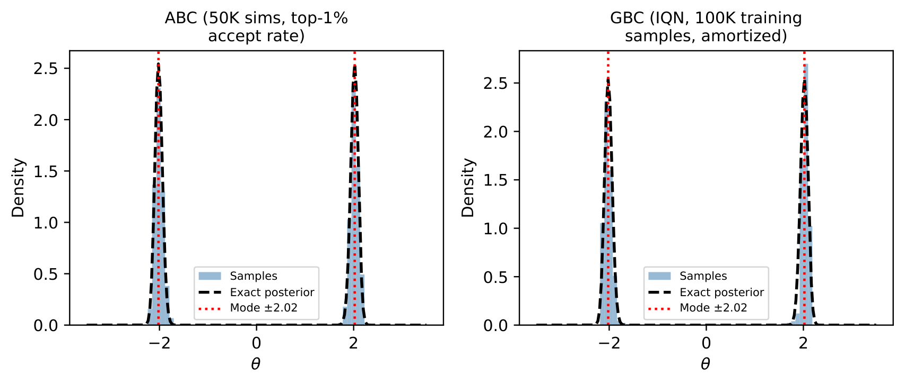
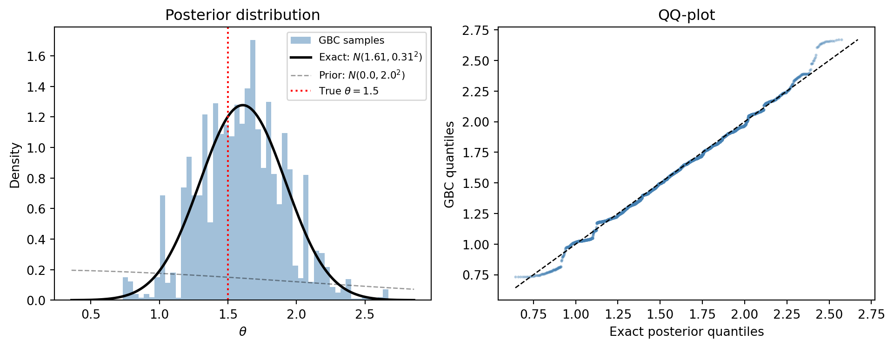
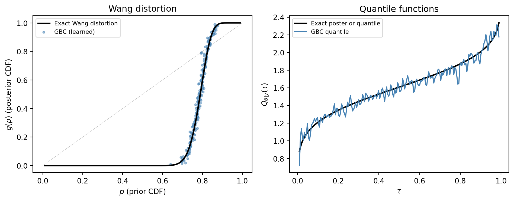
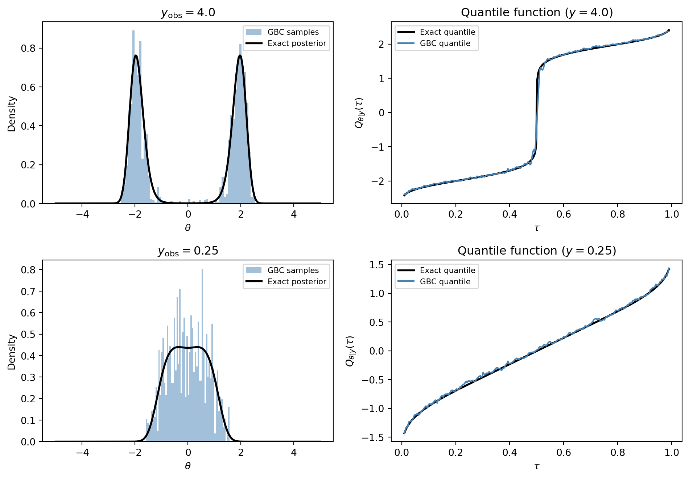
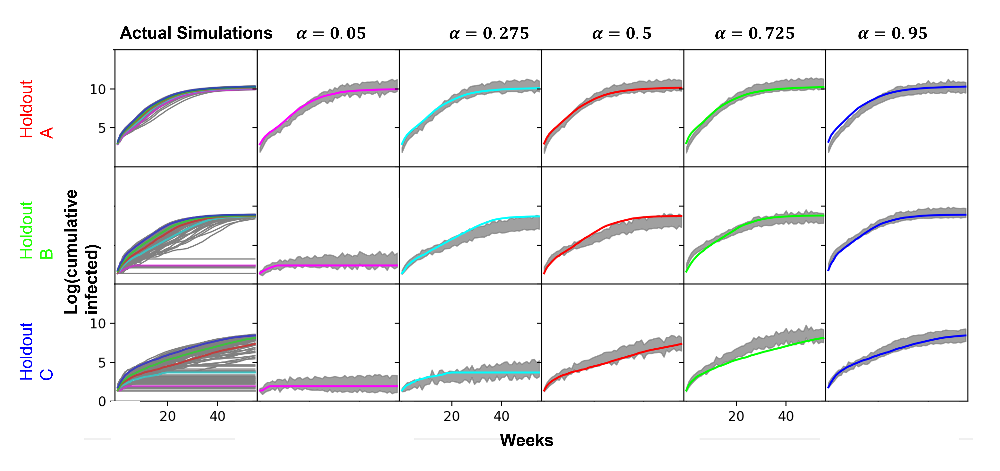
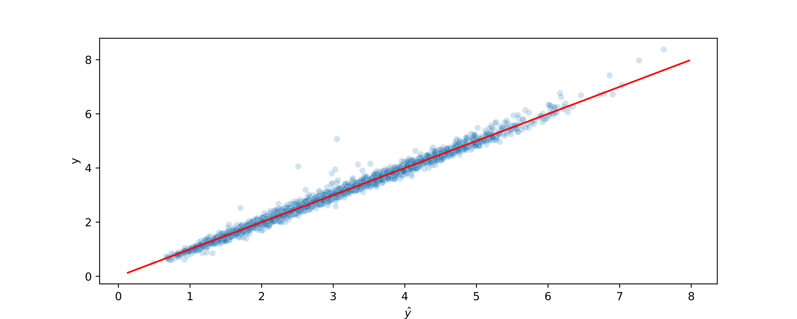
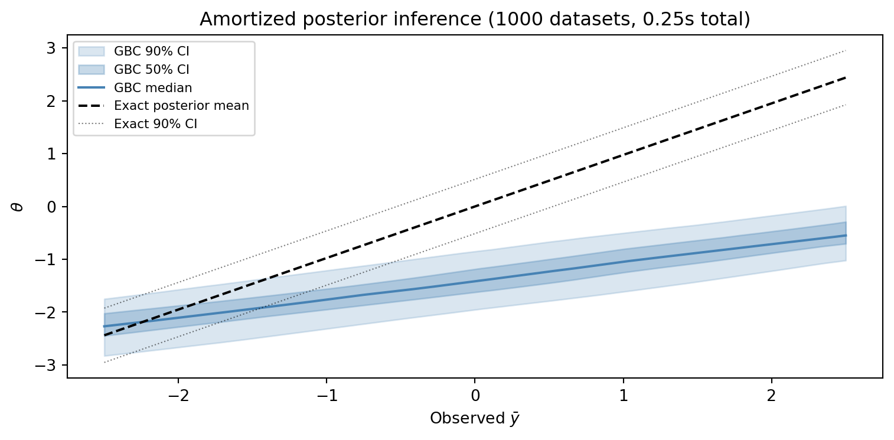

10 Bayesian Inference Without MCMC
This is the pivot chapter of the book. In Part I (Chapters 1–5), we built the theoretical foundations: quantile functions, the noise outsourcing theorem, and implicit quantile networks. In Part II (Chapters 6–9), we applied these tools to surrogates and active learning. Now we turn to the question that motivated this entire enterprise: can we perform Bayesian inference without Markov chain Monte Carlo?
The answer is yes, and the method is Generative Bayesian Computation (GBC). The idea is simple. Instead of running an MCMC chain for each observed dataset, we simulate a large training set of (parameter, data) pairs from the prior and likelihood, then train a neural network to map from data to posterior samples. Once trained, the network produces posterior samples for any observed dataset via a single forward pass — no chains, no convergence diagnostics, no burn-in. The shift in perspective is from sequential sampling (MCMC generates a chain of parameter values, one at a time, for a fixed dataset) to amortized learning (GBC trains once on many simulated datasets, then produces posterior samples instantly for any new dataset).
To appreciate why this matters, consider a concrete scenario. A pharmaceutical company is running a Bayesian adaptive clinical trial with 200 hospitals. Each hospital enrolls patients and reports outcomes weekly. The trial protocol requires updating the posterior distribution of the treatment effect at each hospital after every new batch of data, to decide whether to continue enrollment, declare efficacy, or stop for futility. With MCMC, each posterior update requires running a fresh chain — say, 5 minutes per hospital, 200 hospitals, 52 weeks — a total of over 860 hours of computation per year just for posterior updates. With GBC, the same updates take milliseconds per hospital, because the IQN was trained once before the trial began. The time savings free up computational resources for more important tasks: model checking, sensitivity analysis, and decision optimization.
This chapter develops the GBC algorithm for Bayesian inference step by step. We begin with the classical Bayesian setup and its computational challenges (Section 10.1). We then review Approximate Bayesian Computation (ABC), the first likelihood-free approach (Section 10.2), and show how GBC overcomes its limitations (Section 10.3). The core GBC algorithm is presented in Section 10.4, with learned summary statistics discussed in Section 10.5.
The heart of the chapter is a sequence of increasingly challenging examples. The conjugate normal-normal model (Section 10.6) validates GBC against an exact posterior and reveals the Wang distortion interpretation. The bimodal posterior example (Section 10.7) tests GBC on a problem that trips up MCMC and variational methods. The multivariate parameter discussion (Section 10.8) extends GBC to the \(d > 1\) case, comparing independent and autoregressive strategies. Two applied examples — simulator-based inference for an Ebola agent-based model (Section 10.9) and satellite drag estimation (Section 10.10) — demonstrate GBC on real scientific problems. Throughout, the amortization advantage (Section 10.11) emerges as a recurring theme. We conclude by positioning GBC relative to the classical Bayesian toolbox (Section 10.12) and honestly assessing when MCMC remains the better choice (Section 10.13).
The connections to earlier chapters are explicit. The noise outsourcing theorem (Chapter 4) guarantees that the posterior quantile map exists. The IQN architecture (Chapter 5) is the engine that learns it. The pinball loss (Chapter 3) provides the training objective. The summary statistics play the role of the conditioning variable in the conditional quantile function. Everything we built in Part I converges here.
10.1 The Bayesian Inference Problem
We need to be precise about what we mean by “Bayesian inference” and what makes it computationally hard. This section states the problem; the rest of the chapter solves it.
Bayesian inference begins with two ingredients: a prior distribution \(\pi(\theta)\) encoding our beliefs about the parameter \(\theta\) before seeing data, and a likelihood \(p(y \mid \theta)\) specifying how data \(y = (y_1, \ldots, y_n)\) are generated given the parameter. Bayes’ theorem combines these into the posterior distribution: \[ \pi(\theta \mid y) = \frac{p(y \mid \theta) \, \pi(\theta)}{\int p(y \mid \theta') \, \pi(\theta') \, d\theta'}. \tag{10.1}\]
The posterior is the complete answer to any inference question: point estimates (the posterior mean or median), credible intervals (quantiles of the posterior), predictions (the posterior predictive distribution), and decisions (expected utility with respect to the posterior) all flow from it. This is the framework laid out in standard Bayesian textbooks (e.g., Gelman et al. 2013; Robert and Casella 2004). Every downstream task — point estimates, credible intervals, predictions, decisions — is a functional of the posterior.
The Bayesian framework separates modeling (specifying the prior and likelihood) from computation (obtaining the posterior). The modeler’s job is to choose \(\pi(\theta)\) and \(p(y \mid \theta)\) to reflect their scientific knowledge. The computer’s job is to compute the posterior. GBC is a new computational engine for this second step.
The computational challenge is the denominator in Eq. 10.1 — the marginal likelihood \(m(y) = \int p(y \mid \theta') \, \pi(\theta') \, d\theta'\). Except for a handful of conjugate models, this integral is analytically intractable. The dimension of \(\theta\) is the culprit: a 10-dimensional parameter space requires a 10-dimensional integral, and grid-based quadrature becomes hopeless above about \(d = 4\) dimensions. Even for low-dimensional problems, the integrand may be highly peaked or multi-modal, making naive Monte Carlo integration inefficient.
The standard solution, developed over the past four decades, is Markov chain Monte Carlo (MCMC): construct a Markov chain whose stationary distribution is \(\pi(\theta \mid y)\), run it for \(T\) iterations, and use the samples \(\theta^{(1)}, \ldots, \theta^{(T)}\) as a Monte Carlo approximation to the posterior. MCMC avoids computing the marginal likelihood entirely: the Metropolis-Hastings acceptance ratio \(p(y \mid \theta') \pi(\theta') / [p(y \mid \theta) \pi(\theta)]\) cancels the denominator, so we only need to evaluate the unnormalized posterior \(p(y \mid \theta) \pi(\theta)\).
MCMC is among the most important computational developments in statistics — the Metropolis algorithm (Metropolis et al. 1953), the Gibbs sampler (Geman and Geman 1984; Gelfand and Smith 1990), and Hamiltonian Monte Carlo (Neal 2011) with NUTS (Hoffman and Gelman 2014) powering Stan (Carpenter et al. 2017) and other probabilistic programming languages. Its limitations — uncertain convergence, mixing failures in high dimensions, per-dataset cost, and the requirement to evaluate \(p(y \mid \theta)\) — were discussed in Section 1.1. Here we focus on a structural limitation: MCMC requires evaluating the likelihood at every proposed parameter value. For simulator-based models, this is a non-starter.
10.2 ABC: The First Likelihood-Free Method
The most radical limitation of MCMC is not about efficiency or convergence — it is about scope. MCMC requires evaluating the likelihood \(p(y \mid \theta)\) at every proposed parameter value. For many of the most interesting scientific models — agent-based simulations, complex physical codes, stochastic network models — we can run the model forward (given \(\theta\), generate \(y\)) but we cannot write down the likelihood (given \(\theta\) and \(y\), compute \(p(y \mid \theta)\)). These are called implicit or simulator-based models, and they are ubiquitous in the sciences. For such models, MCMC is not merely inefficient — it is inapplicable.
The first breakthrough came from the genetics community. Rubin (1984) observed that one could interpret Bayesian inference purely through simulation: draw \(\theta\) from the prior, simulate data \(y^{\text{sim}}\) from the model, and keep those \(\theta\) values for which \(y^{\text{sim}}\) matches \(y_{\text{obs}}\). The resulting accepted samples are exact draws from the posterior — if we could achieve exact matching.
This idea lay dormant until Tavaré et al. (1997) and Pritchard et al. (1999) formalized it for population genetics, where the likelihood involves complex coalescent processes that have no closed form. Mark A. Beaumont, Zhang, and Balding (2002) introduced the modern form of the algorithm, which they called Approximate Bayesian Computation (ABC). The name is apt: the method is approximate (because exact matching is impossible for continuous data), Bayesian (because it targets the posterior), and computational (because it requires only the ability to simulate from the model).
TipAlgorithm 10.1: Rejection ABC
Input: Prior \(\pi(\theta)\), simulator \(p(y \mid \theta)\), observed data \(y_{\text{obs}}\), summary statistic \(S(\cdot)\), tolerance \(\varepsilon > 0\).
For \(i = 1, \ldots, N\):
- Draw \(\theta^{(i)} \sim \pi(\theta)\).
- Simulate \(y^{(i)} \sim p(y \mid \theta^{(i)})\).
- Compute \(d_i = \| S(y^{(i)}) - S(y_{\text{obs}}) \|\).
- Accept \(\theta^{(i)}\) if \(d_i < \varepsilon\).
Output: The accepted \(\theta\) values are approximate samples from \(\pi(\theta \mid S(y_{\text{obs}}))\).
The summary statistic \(S : \mathbb{R}^n \to \mathbb{R}^k\) is essential. When \(n\) is large, exact matching of \(y^{\text{sim}} = y_{\text{obs}}\) is impossible, so we compare lower-dimensional summaries instead. If \(S\) is a sufficient statistic for \(\theta\), then \(\pi(\theta \mid S(y)) = \pi(\theta \mid y)\) by the factorization theorem, and no information is lost. In general, \(S\) captures the most informative features of the data.
The tolerance \(\varepsilon\) controls the bias-variance tradeoff. As \(\varepsilon \to 0\), the ABC posterior converges to the true posterior (given the summary statistic). But the acceptance rate also goes to zero, so we need an enormous number of simulations. As \(\varepsilon\) grows, the acceptance rate increases but the approximation degrades. To make this concrete, consider a 5-dimensional summary statistic with \(N = 10^6\) simulations. If \(\varepsilon\) is set so that the acceptance rate is 1%, we keep 10,000 samples — enough for a reasonable approximation. But if we need \(\varepsilon\) to be 10 times smaller to achieve acceptable bias, the acceptance rate drops to roughly \(10^{-7}\) (for a 5-dimensional ball), and we would need \(N = 10^{12}\) simulations to keep even 100 samples. This exponential dependence on \(\varepsilon\) (and hence on the dimension \(k\)) is the curse of dimensionality in action.
There is a useful interpretation of ABC as kernel density estimation. The ABC posterior can be written as: \[ \pi_{\text{ABC}}^\varepsilon(\theta \mid y_{\text{obs}}) = \frac{\int K_\varepsilon\!\left(S(y) - S(y_{\text{obs}})\right) p(y \mid \theta) \, dy \, \pi(\theta)}{m_\varepsilon(y_{\text{obs}})}, \tag{10.2}\] where \(K_\varepsilon\) is a kernel function (e.g., the indicator of an \(\varepsilon\)-ball for rejection ABC, or a Gaussian kernel for regression-adjusted ABC). This makes clear that ABC is a local nonparametric estimator: it smooths over simulations that are close to the observation in summary-statistic space. The quality of the approximation depends on two factors: how many simulations fall within the kernel’s bandwidth (determining the Monte Carlo variance), and how well the kernel smoothing approximates the true posterior (determining the bias). The bandwidth \(\varepsilon\) trades off between these two: small \(\varepsilon\) gives low bias but high variance, while large \(\varepsilon\) gives low variance but high bias. This tradeoff is fundamental to all kernel estimators, from kernel density estimation to Nadaraya-Watson regression, and it is the primary limitation that GBC overcomes.
ABC has been enormously successful in population genetics, ecology, epidemiology, and other fields with intractable likelihoods Cranmer, Brehmer, and Louppe (2020). Extensions of the basic rejection algorithm include MCMC-ABC (Marjoram et al. 2003), which embeds the accept-reject step within a Markov chain to improve exploration; SMC-ABC (Sisson, Fan, and Tanaka 2007; Mark A. Beaumont et al. 2009), which uses sequential Monte Carlo to adaptively reduce \(\varepsilon\) through a sequence of intermediate distributions; and regression-adjusted ABC (Mark A. Beaumont, Zhang, and Balding 2002; Blum and François 2010), which fits a local regression model to the accepted \((\theta, S(y))\) pairs to correct for the finite \(\varepsilon\) bias. Each extension addresses one or more of the basic algorithm’s limitations, but all share the fundamental characteristic of local, per-dataset estimation.
An important development is the use of neural networks to improve ABC. Jiang et al. (2017) proposed learning summary statistics by training a neural network to predict \(\theta\) from \(y\), and using the network’s output as the summary statistic for ABC. Papamakarios and Murray (2016) went further, using neural density estimation to replace the rejection step entirely. These developments blur the line between ABC and neural likelihood-free inference, and GBC can be seen as a natural endpoint of this progression: instead of using a neural network to improve ABC, we use it to replace ABC entirely.
Despite these advances, ABC has fundamental limitations that motivate the move to GBC, which we discuss next.
10.3 From ABC to GBC
ABC works by local matching: for each new observation \(y_{\text{obs}}\), find the simulations whose summaries are close to \(S(y_{\text{obs}})\) and use the corresponding parameter values. GBC works by global learning: train a neural network on all simulations simultaneously, then evaluate it at any new observation. This distinction — local versus global — is the central conceptual difference between the two approaches, and it has far-reaching consequences for scalability, efficiency, and the types of posterior shapes that can be captured.
We can make the distinction more precise. ABC is a nonparametric kernel estimator of the posterior: it estimates \(\pi(\theta \mid z)\) at a query point \(z_{\text{obs}}\) by averaging over nearby simulations, weighted by a kernel function \(K_\varepsilon\). Like all kernel estimators, it converges at a rate that degrades with the dimension of the input space. GBC, by contrast, is a parametric approximation of the posterior mapping: it learns a function \(G_\phi(\tau, z)\) that takes any summary statistic \(z\) as input and returns the corresponding posterior quantile. This function is parameterized by the neural network weights \(\phi\), and its approximation quality depends on the smoothness of the target function and the network architecture, not on the density of the training data at any particular query point.
ABC has four limitations that GBC addresses. First, ABC suffers from the curse of dimensionality in the summary statistic: as a kernel smoother operating in the \(k\)-dimensional summary space, its convergence rate scales as \(O(N^{-2/(2+k)})\), which degrades rapidly with \(k\) — a 5-dimensional parameter with 5 summary statistics requires hundreds of thousands of simulations for reasonable accuracy. Deep networks exploit compositional structure and achieve rates that depend on the intrinsic dimension rather than the ambient dimension (Schmidt-Hieber 2020). Second, ABC faces the \(\varepsilon\) dilemma: small \(\varepsilon\) gives low bias but wastes most simulations, while large \(\varepsilon\) accepts more simulations but introduces smoothing bias. The optimal \(\varepsilon\) is problem-specific and unknown in advance; GBC has no \(\varepsilon\) parameter at all — the neural network learns the posterior mapping over the entire space of summary statistics. Third, ABC is not amortized: each new \(y_{\text{obs}}\) requires searching through the simulation database for nearby matches, so 10,000 datasets require 10,000 separate searches, while GBC trains once and evaluates instantly for any new observation. Fourth, ABC wastes most of its simulations — with \(\varepsilon\) small enough to give a good approximation, the acceptance rate can be 0.01% or less — whereas GBC uses every simulation for training.
The following table summarizes the comparison:
| Feature | ABC | GBC |
|---|---|---|
| Estimator type | Local kernel smoother | Global neural network |
| Rate in summary dim \(k\) | \(O(N^{-2/(2+k)})\) | \(O(N^{-2\beta/(2\beta+k^*)})\), \(k^* \leq k\) |
| Tolerance parameter \(\varepsilon\) | Required, problem-specific | None |
| Amortized over datasets | No | Yes |
| Simulation efficiency | Low (most rejected) | High (all used for training) |
| Inference cost per dataset | Search over simulations | Single forward pass |
Figure 10.1 visualizes this contrast on a concrete example: GBC produces sharp posterior estimates from the same simulation budget where ABC must either accept very few samples (small \(\varepsilon\)) or accept a biased posterior (large \(\varepsilon\)).
The shift from ABC to GBC is analogous to the shift from \(k\)-nearest-neighbors regression to deep learning in supervised learning. Both estimate the same conditional distribution, but the latter exploits global structure and compositional representations that local methods miss. Just as a deep network can learn that “images of cats” live on a low-dimensional manifold in pixel space, GBC learns that posterior samples live on a low-dimensional manifold in the joint space of parameters and summary statistics. The network discovers this manifold from the training data, without the modeler having to specify it.
One can also view the transition from ABC to GBC through the lens of information efficiency. ABC uses each simulation exactly once: a simulation is either close enough to the observation (accepted) or not (discarded). GBC uses each simulation as a training example that updates the network weights via gradient descent. A simulation that is far from any particular observation still provides useful information about the global structure of the posterior mapping — it tells the network what the posterior looks like in a different region of summary-statistic space. This global information sharing is what allows GBC to achieve high accuracy with orders of magnitude fewer simulations than ABC.
10.4 The GBC Algorithm
We now state the core algorithm precisely. GBC reduces Bayesian inference to a supervised learning problem. We simulate a training set from the joint distribution of parameters and data, then train a neural network to predict parameters given data. The network learns the conditional quantile function rather than the conditional mean, which allows it to represent the full posterior distribution rather than a point estimate.
The algorithm has four steps: simulate, summarize, train, and infer. The first two steps generate the training data; the third step learns the posterior mapping; the fourth step produces posterior samples for any observed dataset.
TipAlgorithm 10.2: Generative Bayesian Computation (GBC)
Input: Prior \(\pi(\theta)\), simulator \(p(y \mid \theta)\) (or deterministic forward model \(y = f(\theta)\)), observed data \(y_{\text{obs}}\).
Step 1 (Simulate). For \(i = 1, \ldots, N\):
- Draw \(\theta^{(i)} \sim \pi(\theta)\).
- Simulate \(y^{(i)} \sim p(y \mid \theta^{(i)})\).
Step 2 (Summarize). Compute summary statistics:
- \(z^{(i)} = S(y^{(i)}) \in \mathbb{R}^k\) for each simulation.
- \(S\) may be a known sufficient statistic or a learned neural summary (see Section 10.5).
Step 3 (Train IQN). Learn the conditional quantile function \(G_\phi(\tau, z) \approx Q_{\theta \mid z}(\tau)\) by minimizing over the simulated pairs \(\{(\theta^{(i)}, z^{(i)})\}_{i=1}^N\): \[ \min_\phi \frac{1}{N} \sum_{i=1}^N \mathbb{E}_\tau \left[\rho_\tau\!\left(\theta^{(i)} - G_\phi(\tau, z^{(i)})\right)\right], \] where \(\rho_\tau\) is the pinball loss (Eq. 3.2) and \(\tau \sim \text{Uniform}(0, 1)\).
Step 4 (Inference). For observed data \(y_{\text{obs}}\):
- Compute \(z_{\text{obs}} = S(y_{\text{obs}})\).
- Draw \(\tau_1, \ldots, \tau_B \sim \text{Uniform}(0, 1)\).
- Return posterior samples \(\{\hat{\theta}_b = G_\phi(\tau_b, z_{\text{obs}})\}_{b=1}^B\).
Output: \(B\) approximate posterior samples, produced in a single forward pass.
Several remarks are in order.
Noise outsourcing guarantee. The existence of the map \(G^*\) such that \(\theta = G^*(U, S(y))\) where \(U \sim \text{Uniform}(0,1)\) is guaranteed by the noise outsourcing theorem (Chapter 4). The IQN approximates this map. When \(\theta\) is univariate, \(G^*(\tau, z) = F_{\theta \mid z}^{-1}(\tau)\) is the conditional quantile function, and the pinball loss is the natural training objective. This theoretical guarantee is what distinguishes GBC from ad hoc neural density estimation: we know that the target function exists, that it is a quantile function, and that the pinball loss is the Fisher-consistent objective for estimating it.
Multivariate \(\theta\). When \(\theta = (\theta_1, \ldots, \theta_d)\) is a vector, we can either train \(d\) separate IQNs (one per component) or use an autoregressive decomposition: \[ \theta_1 = G_1(\tau_1, z), \quad \theta_2 = G_2(\tau_2, z, \theta_1), \quad \ldots \] The autoregressive approach captures correlations between parameters. In practice, for moderate \(d\) (say, \(d \leq 10\)), training \(d\) independent IQNs works well because the summary statistic \(z\) already encodes the dependence structure. We develop this comparison in detail in Section 10.8.
Training cost. Step 3 requires \(O(N \cdot L \cdot w^2)\) operations, where \(L\) is the number of layers and \(w\) is the hidden dimension. This is a one-time cost. By contrast, MCMC costs \(O(T \cdot n)\) per dataset.
Simulation cost. Step 1 requires \(N\) simulations from the prior and likelihood. This is embarrassingly parallel and can be done on a GPU or cluster. Typical choices are \(N = 10^5\) to \(10^6\).
Connection to supervised learning. Steps 1 and 2 generate a labeled dataset \(\{(z^{(i)}, \theta^{(i)})\}_{i=1}^N\) where the “features” are summary statistics and the “labels” are parameter values. Step 3 is a regression problem: learn to predict \(\theta\) from \(z\). The only difference from standard regression is that we learn the conditional quantile function rather than the conditional mean, which gives us the full posterior distribution rather than a point estimate. From the perspective of machine learning, GBC is simply quantile regression with a clever data-generation strategy. From the perspective of statistics, GBC is a new approach to Bayesian computation that replaces the sequential, per-dataset nature of MCMC with a one-time, amortized training procedure.
This connection to supervised learning has practical implications for the GBC practitioner. All the tools developed for training neural networks — batch normalization, learning rate scheduling, early stopping, data augmentation, ensemble averaging — can be applied to the GBC training procedure. If the IQN underfits (training loss plateaus at a high value), increase the network width or depth. If it overfits (training loss is low but the posterior is poorly calibrated on held-out simulations), add regularization or reduce the network capacity. The rich toolkit of modern deep learning applies directly, which is a significant advantage over ABC, where the practitioner has limited control over the approximation quality beyond the choice of \(\varepsilon\) and \(S\).
Computational complexity. For completeness, let us state the computational complexity of each step precisely. Step 1 costs \(N \cdot C_{\text{sim}}\) where \(C_{\text{sim}}\) is the cost of one simulation. Step 2 costs \(N \cdot C_S\) where \(C_S\) is the cost of computing the summary statistic (typically \(O(n)\) for a dataset of size \(n\)). Step 3 costs \(E \cdot \lceil N/B \rceil \cdot C_{\text{fwd}}\) where \(E\) is the number of epochs, \(B\) is the batch size, and \(C_{\text{fwd}} = O(B \cdot w^2 \cdot L)\) is the cost of a forward-backward pass through a network with \(L\) layers of width \(w\). Step 4 costs \(B' \cdot C_{\text{eval}}\) where \(B'\) is the number of posterior samples and \(C_{\text{eval}} = O(w^2 \cdot L)\) is the cost of one forward pass. The total training cost is dominated by Step 1 when simulations are expensive, and by Step 3 when simulations are cheap but the network is large. The inference cost (Step 4) is always negligible.
10.5 Learning Summary Statistics
The quality of GBC depends critically on the summary statistic \(S(y)\). If \(S\) is a sufficient statistic for \(\theta\), no information is lost and GBC targets the exact posterior. But sufficient statistics exist only for exponential family models. For general models, we need to learn \(S\) from the simulated data.
The challenge of choosing \(S\) has been central to the ABC literature for two decades. Early ABC practitioners used domain-specific summaries chosen by expert judgment: for population genetics, the number of segregating sites and the mean pairwise difference; for epidemiology, the peak incidence and the time to peak. These hand-crafted summaries work well when the expert’s intuition aligns with the model, but they can lose information in subtle ways, and for novel models there may be no obvious choice.
Jiang et al. (2017) made a key observation: the posterior mean \(\mathbb{E}[\theta \mid y]\) is an optimal summary statistic. Specifically, for any loss function that is minimized at the posterior mean (such as squared error), \(S(y) = \mathbb{E}[\theta \mid y]\) achieves the smallest Bayes risk among all summaries of the same dimension. Moreover, Kolmogorov (1942) showed that in exponential families, the posterior mean is a one-to-one function of the minimal sufficient statistic. The implication for GBC is powerful: if we can learn the posterior mean from simulated data, we have automatically learned an optimal summary statistic, without needing to know the parametric form of the likelihood or the sufficient statistic.
The function \(S(y) = \mathbb{E}[\theta \mid y]\) is the Bayes estimator under squared error loss. But we are not interested in point estimation — we want the full posterior. This same function \(S\) also serves as the optimal input to the IQN, because it compresses the data into the most informative finite-dimensional summary. Any other summary of the same dimension would lose information relative to the posterior mean.
This suggests a two-stage procedure for learning summary statistics:
Stage 1: Learn the posterior mean. Train a neural network \(\hat{S}_\psi : \mathbb{R}^n \to \mathbb{R}^d\) by minimizing the mean squared error over the simulated pairs: \[ \min_\psi \frac{1}{N} \sum_{i=1}^N \left\| \hat{S}_\psi(y^{(i)}) - \theta^{(i)} \right\|^2. \tag{10.3}\] The minimizer approximates \(\hat{S}_\psi(y) \approx \mathbb{E}[\theta \mid y]\).
Stage 2: Train IQN on summaries. Use \(z^{(i)} = \hat{S}_\psi(y^{(i)})\) as inputs to the IQN in Algorithm 10.2.
This approach connects to the Brillinger–Jiang insight (Brillinger 2004; Jiang et al. 2017): the posterior mean can be learned by a simple MSE regression, independent of the quantile estimation in Stage 2. The dimension reduction (from \(n\) observations to \(d\) summaries) is handled entirely in Stage 1, and the IQN in Stage 2 operates in the low-dimensional summary space.
When \(y\) is low-dimensional (say, \(n \leq 10\)), we can skip Stage 1 and use \(y\) directly as the input to the IQN. When \(y\) is high-dimensional (e.g., time series with \(n = 1000\) observations), the two-stage approach is essential. For our examples in this chapter, the sufficient statistics are known, so we use them directly.
In classical statistics, finding a sufficient statistic requires knowing the parametric form of the likelihood — it is a property of the model, not of the data. The Brillinger-Jiang insight turns this on its head: we can learn the summary statistic from simulated data, without ever writing down a likelihood. The MSE regression in Stage 1 discovers which features of the data are informative about the parameter, and the IQN in Stage 2 uses these features to learn the full posterior. The two stages are modular: Stage 1 can use any architecture (feedforward network, convolutional network for image data, recurrent network for time series), and Stage 2 always uses the IQN. This modularity is a practical advantage, because it allows the summary-statistic network to be tailored to the data structure while the posterior estimation machinery remains the same.
A natural question is whether the two-stage approach loses information compared to an end-to-end approach that jointly learns the summary and the posterior. In principle, end-to-end training could discover summaries that are optimized for quantile estimation rather than mean estimation. In practice, the two-stage approach is more stable and easier to debug, because each stage has a clear objective and can be validated independently. We recommend the two-stage approach as the default and reserve end-to-end training for settings where the two-stage approach demonstrably underperforms.
There is one more subtlety worth mentioning. The quality of the learned summary statistic depends on the quality of the MSE regression in Stage 1. If the posterior mean function \(\mathbb{E}[\theta \mid y]\) is highly nonlinear or discontinuous, the regression network may need to be large and well-trained to approximate it accurately. Poor summary statistics lead to poor posterior estimates, regardless of how well the IQN is trained in Stage 2. A useful diagnostic is to check the out-of-sample MSE of the Stage 1 network: if it is much larger than the posterior variance (which can be estimated from the simulated data), the summary statistic is losing information and a better Stage 1 architecture is needed. For the Ebola ABM, the 56-week trajectory must be compressed into a small number of summary statistics, and the choice of compression architecture (1D convolutional network, recurrent network, or hand-crafted quantiles as in Fadikar et al. (2018)) is a critical modeling decision.
10.6 Example: Normal-Normal Conjugate
We begin with the conjugate normal-normal model — simple enough to solve exactly, yet rich enough to illustrate the key ideas. The purpose of this example is not to argue that GBC should replace conjugate analysis for normal models — it should not — but to provide a rigorous validation. If GBC cannot recover the exact posterior for a model where the exact posterior is known in closed form, we would have no reason to trust it on harder problems where the posterior is unknown. This example establishes the baseline.
Model. We observe \(y_1, \ldots, y_n \stackrel{\text{iid}}{\sim} \mathcal{N}(\theta, \sigma^2)\) with known variance \(\sigma^2\), and place a normal prior \(\theta \sim \mathcal{N}(\mu_0, \sigma_0^2)\).
Exact posterior. By conjugacy, the posterior is \(\theta \mid y \sim \mathcal{N}(\mu_n, \sigma_n^2)\) where: \[ \mu_n = \frac{\sigma_0^2 \cdot n \bar{y} + \sigma^2 \cdot \mu_0}{\sigma_0^2 \cdot n + \sigma^2}, \qquad \sigma_n^2 = \frac{\sigma^2 \cdot \sigma_0^2}{\sigma_0^2 \cdot n + \sigma^2}. \tag{10.4}\]
The posterior mean is a precision-weighted average of the prior mean \(\mu_0\) and the sample mean \(\bar{y}\). As \(n\) increases, the posterior mean shifts toward \(\bar{y}\) (the data dominate the prior), and the posterior variance shrinks toward zero (the data overwhelm the prior uncertainty). In the limit \(n \to \infty\), the posterior converges to a point mass at the true parameter value — this is the Bayesian version of consistency. In the limit \(n = 0\), the posterior equals the prior — no data, no update. The sufficient statistic is \(S(y) = \bar{y}\), so the posterior depends on the data only through the sample mean. This is a consequence of the factorization theorem: for the normal model with known variance, the sample mean is the minimal sufficient statistic, and the posterior is a function of the sample mean alone.
Wang distortion interpretation. The prior-to-posterior update has a natural interpretation in quantile space. The prior CDF is \(F_\theta(t) = \Phi\!\left(\frac{t - \mu_0}{\sigma_0}\right)\) and the posterior CDF is \(F_{\theta \mid y}(t) = \Phi\!\left(\frac{t - \mu_n}{\sigma_n}\right)\). These are related by a Wang distortion (Wang 2000): \[ F_{\theta \mid y}(t) = g\!\left(F_\theta(t)\right), \qquad g(p) = \Phi\!\left(\lambda_1 \Phi^{-1}(p) + \lambda_0\right), \tag{10.5}\] where \(\lambda_1 = \sigma_0 / \sigma_n\) and \(\lambda_0 = \lambda_1 (\mu_0 - \mu_n) / \sigma_0 = (\mu_0 - \mu_n)/\sigma_n\). The distortion function \(g : [0,1] \to [0,1]\) is an S-shaped curve that warps the prior quantiles into posterior quantiles. The neural network in GBC learns this distortion from simulated data — no density computation required.
The Wang distortion provides a complete characterization of the prior-to-posterior update in quantile space. When \(\lambda_1 > 1\), the distortion steepens the CDF — the posterior is more concentrated than the prior. When \(\lambda_0 \neq 0\), the distortion shifts the CDF — the posterior mean differs from the prior mean. In the limit of infinite data (\(n \to \infty\)), \(\lambda_1 \to \infty\) and the distortion approaches a step function, corresponding to a posterior that collapses to a point mass at \(\bar{y}\). In the limit of no data (\(n = 0\)), \(\lambda_1 = 1\) and \(\lambda_0 = 0\), so \(g(p) = p\) (the identity) and the posterior equals the prior. The IQN learns to interpolate between these extremes based on the summary statistic \(\bar{y}\).
Let us now implement GBC for this model and verify that it recovers the exact posterior.
Show code (13 lines)
import torch
import torch.nn as nn
import numpy as np
import matplotlib.pyplot as plt
from scipy import stats
torch.manual_seed(42)
np.random.seed(42)
# ── Model parameters ──
mu_0, sigma_0 = 0.0, 2.0 # Prior: theta ~ N(0, 4)
sigma = 1.0 # Likelihood: y_i | theta ~ N(theta, 1)
n_obs = 10 # Number of observations per datasetWe will implement GBC in three steps, exactly following Algorithm 10.2. First, simulate training data from the prior and likelihood. Second, train an IQN on the simulated pairs. Third, perform inference for an observed dataset and compare to the exact posterior. The code is deliberately transparent: no library calls to gbc (we want the reader to see every step), and the IQN architecture is a minimal implementation that trains in seconds on a laptop.
Step 1: Simulate training data. We draw parameters from the prior, simulate datasets, and compute the sufficient statistic \(\bar{y}\).
Show code (12 lines)
N_sim = 50_000 # Number of simulated (theta, y) pairs
# Draw from prior
theta_sim = np.random.normal(mu_0, sigma_0, N_sim)
# Simulate datasets: for each theta, generate n_obs observations and compute y_bar
y_bar_sim = np.array([
np.random.normal(th, sigma, n_obs).mean() for th in theta_sim
])
print(f"Simulated {N_sim} pairs: theta in [{theta_sim.min():.2f}, {theta_sim.max():.2f}]")
print(f"Summary stat y_bar in [{y_bar_sim.min():.2f}, {y_bar_sim.max():.2f}]")Step 2: Train IQN. We use the IQN architecture from Chapter 5, with the summary statistic \(\bar{y}\) as input. The network learns to map \((\tau, \bar{y}) \mapsto Q_{\theta \mid \bar{y}}(\tau)\). The architecture uses the cosine embedding for \(\tau\) (following the distributional RL literature, Chapter 6) and a multiplicative interaction between the \(\tau\)-embedding and the \(x\)-embedding. The hidden dimension is 128, which is more than sufficient for this 1D problem but provides a template for harder problems later in the chapter.
Show code (59 lines)
class IQN(nn.Module):
"""Implicit Quantile Network for 1D parameter inference."""
def __init__(self, xdim=1, hdim=128, M=64):
super().__init__()
self.M = M
self.fc_tau = nn.Sequential(nn.Linear(M, hdim), nn.ReLU())
self.fc_x = nn.Sequential(nn.Linear(xdim, hdim), nn.ReLU())
self.head = nn.Sequential(
nn.Linear(hdim, hdim), nn.ReLU(),
nn.Linear(hdim, 64), nn.Tanh(),
nn.Linear(64, 1)
)
def forward(self, x, tau):
i = torch.arange(self.M, dtype=torch.float32)
h_tau = self.fc_tau(torch.cos(i * torch.pi * tau))
h_x = self.fc_x(x)
h = h_x * h_tau.unsqueeze(0) if h_tau.dim() == 1 else h_x * h_tau
return self.head(h)
# Prepare data
X_train = torch.tensor(y_bar_sim, dtype=torch.float32).unsqueeze(1)
Y_train = torch.tensor(theta_sim, dtype=torch.float32).unsqueeze(1)
# Normalize inputs for stable training
x_mean, x_std = X_train.mean(), X_train.std()
y_mean, y_std = Y_train.mean(), Y_train.std()
X_norm = (X_train - x_mean) / x_std
Y_norm = (Y_train - y_mean) / y_std
model = IQN(xdim=1, hdim=128, M=64)
optimizer = torch.optim.Adam(model.parameters(), lr=1e-3)
scheduler = torch.optim.lr_scheduler.CosineAnnealingLR(optimizer, T_max=2000)
# Training loop
batch_size = 512
n_epochs = 2000
losses = []
for epoch in range(n_epochs):
idx = torch.randint(0, len(X_norm), (batch_size,))
x_batch = X_norm[idx]
y_batch = Y_norm[idx]
# Note: sampling a single tau per epoch is a computational simplification.
# For more efficient training, sample a different tau per observation:
# tau = torch.rand(batch_size, 1) and compute pinball loss elementwise.
tau = torch.rand(1).item()
q_hat = model(x_batch, tau)
residual = y_batch - q_hat
loss = torch.mean(torch.max(tau * residual, (tau - 1) * residual))
optimizer.zero_grad()
loss.backward()
optimizer.step()
scheduler.step()
losses.append(loss.item())
print(f"Training complete. Final loss: {losses[-1]:.6f}")The training takes about 30 seconds on a modern laptop with no GPU. The final loss value gives a rough indication of the approximation quality: lower is better, and values near 0.2 for normalized data indicate a good fit. We can also monitor the loss curve to ensure that training has converged; if the loss is still decreasing at the end, we should train for more epochs.
Step 3: Inference. We observe a specific dataset and compare the GBC posterior to the exact posterior.
Show code (55 lines)
Code
# Generate observed data
theta_true = 1.5
y_obs = np.random.normal(theta_true, sigma, n_obs)
y_bar_obs = y_obs.mean()
# Exact posterior
sigma_n2 = (sigma**2 * sigma_0**2) / (sigma_0**2 * n_obs + sigma**2)
mu_n = (sigma_0**2 * n_obs * y_bar_obs + sigma**2 * mu_0) / (sigma_0**2 * n_obs + sigma**2)
sigma_n = np.sqrt(sigma_n2)
# GBC inference: draw tau values and evaluate
model.eval()
B = 5000
with torch.no_grad():
z_obs = torch.tensor([[y_bar_obs]], dtype=torch.float32)
z_obs_norm = (z_obs - x_mean) / x_std
taus = torch.rand(B)
gbc_samples = []
for t in taus:
q = model(z_obs_norm, t.item())
gbc_samples.append(q.item())
gbc_samples = np.array(gbc_samples) * y_std.item() + y_mean.item()
# Plot
fig, (ax1, ax2) = plt.subplots(1, 2, figsize=(10, 4))
# Left: histogram vs exact
t_grid = np.linspace(mu_n - 4*sigma_n, mu_n + 4*sigma_n, 200)
ax1.hist(gbc_samples, bins=50, density=True, alpha=0.5, color='steelblue',
label='GBC samples')
ax1.plot(t_grid, stats.norm.pdf(t_grid, mu_n, sigma_n), 'k-', lw=2,
label=f'Exact: $N({mu_n:.2f}, {sigma_n:.2f}^2)$')
ax1.plot(t_grid, stats.norm.pdf(t_grid, mu_0, sigma_0), 'k--', lw=1,
alpha=0.4, label=f'Prior: $N({mu_0}, {sigma_0}^2)$')
ax1.axvline(theta_true, color='red', ls=':', lw=1.5, label=f'True $\\theta = {theta_true}$')
ax1.set_xlabel(r'$\theta$')
ax1.set_ylabel('Density')
ax1.set_title('Posterior distribution')
ax1.legend(fontsize=8)
# Right: QQ plot
gbc_sorted = np.sort(gbc_samples)
theoretical_quantiles = stats.norm.ppf(
np.linspace(0.001, 0.999, len(gbc_sorted)), mu_n, sigma_n
)
ax2.scatter(theoretical_quantiles, gbc_sorted, s=2, alpha=0.3, color='steelblue')
lims = [min(theoretical_quantiles.min(), gbc_sorted.min()),
max(theoretical_quantiles.max(), gbc_sorted.max())]
ax2.plot(lims, lims, 'k--', lw=1)
ax2.set_xlabel('Exact posterior quantiles')
ax2.set_ylabel('GBC quantiles')
ax2.set_title('QQ-plot')
plt.tight_layout()
plt.show()
The left panel of Figure 10.2 shows that the GBC posterior samples closely match the exact normal posterior density. The prior (dashed line) is broad; after seeing \(n = 10\) observations, the posterior concentrates around the true value \(\theta = 1.5\). The QQ-plot on the right confirms the distributional match: the GBC quantiles fall along the diagonal, indicating that the learned quantile function accurately reproduces the exact posterior.
The QQ-plot deserves special attention because it is the most sensitive diagnostic for distributional match. A histogram can look good even when the tails are slightly wrong, but a QQ-plot amplifies deviations in the tails by spreading them out along the horizontal axis. The fact that our QQ-plot shows no systematic deviation from the diagonal, even in the tails (around \(\tau = 0.01\) and \(\tau = 0.99\)), confirms that the IQN has learned the full posterior distribution, not just its central tendency.
This example illustrates the fundamental mechanism of GBC: the IQN learns to transform a uniform random variable \(\tau\) into a posterior sample, conditioned on the summary statistic \(\bar{y}\). The Wang distortion in Eq. 10.5 tells us what the network is learning — a smooth, S-shaped warping of the prior quantiles into posterior quantiles. The network discovers this distortion from data, without ever computing a density or a likelihood ratio.
Let us verify the Wang distortion directly:
Show code (43 lines)
Code
fig, (ax1, ax2) = plt.subplots(1, 2, figsize=(10, 4))
# Wang distortion: g(p) = Phi(lambda1 * Phi^{-1}(p) + lambda0)
lambda1 = sigma_0 / sigma_n
lambda0 = lambda1 * (mu_0 - mu_n) / sigma_0
p_grid = np.linspace(0.01, 0.99, 200)
g_exact = stats.norm.cdf(lambda1 * stats.norm.ppf(p_grid) + lambda0)
# GBC distortion: for each tau, evaluate G(tau, z_obs), then compute F_prior(G)
model.eval()
tau_grid = np.linspace(0.01, 0.99, 200)
gbc_quantiles = []
with torch.no_grad():
for t in tau_grid:
q = model(z_obs_norm, t)
gbc_quantiles.append(q.item() * y_std.item() + y_mean.item())
gbc_quantiles = np.array(gbc_quantiles)
# The prior CDF evaluated at GBC quantiles
gbc_prior_cdf = stats.norm.cdf(gbc_quantiles, mu_0, sigma_0)
ax1.plot(p_grid, g_exact, 'k-', lw=2, label='Exact Wang distortion')
ax1.scatter(gbc_prior_cdf, tau_grid, s=8, alpha=0.5, color='steelblue',
label='GBC (learned)')
ax1.plot([0, 1], [0, 1], 'k--', lw=0.5, alpha=0.3)
ax1.set_xlabel('$p$ (prior CDF)')
ax1.set_ylabel('$g(p)$ (posterior CDF)')
ax1.set_title('Wang distortion')
ax1.legend(fontsize=8)
# Right: quantile functions
exact_quantiles = stats.norm.ppf(tau_grid, mu_n, sigma_n)
ax2.plot(tau_grid, exact_quantiles, 'k-', lw=2, label='Exact posterior quantile')
ax2.plot(tau_grid, gbc_quantiles, '-', color='steelblue', lw=1.5,
label='GBC quantile')
ax2.set_xlabel(r'$\tau$')
ax2.set_ylabel(r'$Q_{\theta|y}(\tau)$')
ax2.set_title('Quantile functions')
ax2.legend(fontsize=8)
plt.tight_layout()
plt.show()
Figure 10.3 confirms that GBC learns the Wang distortion. The left panel shows the distortion function \(g(p) = \Phi(\lambda_1 \Phi^{-1}(p) + \lambda_0)\): the GBC points (blue) lie on the exact curve (black). The deviation from the diagonal reflects how much the data update the prior — if the data were uninformative, \(g(p) = p\) (the identity). The right panel shows the corresponding quantile functions: the learned quantile function matches the exact posterior quantile function across the full range of \(\tau\).
The Wang distortion provides a geometric picture of Bayesian learning. Before seeing data, our beliefs about \(\theta\) are described by the prior quantile function \(Q_\theta(\tau) = \mu_0 + \sigma_0 \Phi^{-1}(\tau)\). After seeing data, our beliefs are described by the posterior quantile function \(Q_{\theta \mid y}(\tau) = \mu_n + \sigma_n \Phi^{-1}(\tau)\). The distortion function \(g\) maps between these two quantile functions: \(Q_{\theta \mid y}(\tau) = Q_\theta(g^{-1}(\tau))\). The IQN learns \(Q_{\theta \mid y}\) directly, but implicitly it has learned \(g\) as well. For non-Gaussian posteriors, the distortion function is no longer a simple \(\Phi\)-transform, but the IQN still learns whatever the correct distortion happens to be. The normal-normal case is special only because the distortion has a closed-form expression that we can verify against.
10.7 Example: Bimodal Posterior
Any reasonable method recovers a Gaussian posterior. The real test is whether GBC can capture complex posterior shapes that would trip up simpler methods. Variational inference with a Gaussian family would miss multimodality entirely. Laplace approximation would find one mode and declare victory. Even MCMC can struggle if the chain gets trapped in one mode and the between-mode mixing time is astronomical.
We now consider a model with a bimodal posterior, where the parameter can take two well-separated values with similar plausibility.
Model. Consider the observation model: \[ y \mid \theta \sim \mathcal{N}(\theta^2, 1), \qquad \theta \sim \mathcal{N}(0, 4). \tag{10.6}\]
The likelihood depends on \(\theta\) through \(\theta^2\), so if \(y = 4\) is observed, both \(\theta = 2\) and \(\theta = -2\) are equally plausible. The posterior is bimodal for most positive values of \(y\). This is a notoriously difficult case for MCMC: a Metropolis-Hastings chain initialized near \(\theta = 2\) will explore the positive mode thoroughly but may take an exponentially long time to jump across the low-density region near \(\theta = 0\) to discover the negative mode. The chain appears to have converged — all diagnostics look good within the positive mode — but it is missing half the posterior mass. Parallel tempering and replica exchange methods can help, but they add complexity and computational cost.
The bimodal model is not merely a toy example. Sign ambiguities arise naturally in many statistical models: in factor analysis, the sign of a factor loading is not identifiable from the likelihood; in signal processing, the phase of a complex signal may be ambiguous; in astronomy, the inclination of a binary star orbit can have two solutions. In mixture models, the labeling of components is arbitrary, leading to label-switching multimodality. In neural network weight spaces, the symmetry of hidden units creates exponentially many equivalent modes. In all these cases, the posterior is multimodal, and a method that can only find one mode gives a dangerously incomplete picture of the uncertainty.
For our model \(y \mid \theta \sim \mathcal{N}(\theta^2, 1)\), the bimodality has a clean geometric interpretation. The forward map \(\theta \mapsto \theta^2\) is a two-to-one function: both \(\theta\) and \(-\theta\) map to the same value. The posterior is obtained by “inverting” this map probabilistically, and the two preimages of \(y\) become the two posterior modes. The prior provides the relative weighting: if the prior favors positive \(\theta\) (e.g., \(\theta \sim \text{Uniform}(0, 4)\)), the positive mode would dominate. With our symmetric prior \(\theta \sim \mathcal{N}(0, 4)\), the two modes have equal weight. As \(y\) increases, the modes move further apart (to \(\pm\sqrt{y}\)), and the inter-mode region becomes an increasingly deep valley that MCMC chains must cross.
Let us implement GBC for this model.
Show code (20 lines)
torch.manual_seed(123)
np.random.seed(123)
# ── Simulate training data ──
N_sim = 100_000
theta_sim = np.random.normal(0, 2.0, N_sim) # Prior: N(0, 4)
y_sim = np.random.normal(theta_sim**2, 1.0, N_sim) # Likelihood: N(theta^2, 1)
X_train = torch.tensor(y_sim, dtype=torch.float32).unsqueeze(1)
Y_train = torch.tensor(theta_sim, dtype=torch.float32).unsqueeze(1)
x_mean, x_std = X_train.mean(), X_train.std()
y_mean, y_std = Y_train.mean(), Y_train.std()
X_norm = (X_train - x_mean) / x_std
Y_norm = (Y_train - y_mean) / y_std
print(f"Simulated {N_sim} pairs.")
print(f" theta range: [{theta_sim.min():.2f}, {theta_sim.max():.2f}]")
print(f" y range: [{y_sim.min():.2f}, {y_sim.max():.2f}]")Show code (29 lines)
Code
# ── Train IQN (larger network for bimodal) ──
model_bm = IQN(xdim=1, hdim=256, M=64)
optimizer = torch.optim.Adam(model_bm.parameters(), lr=1e-3)
scheduler = torch.optim.lr_scheduler.CosineAnnealingLR(optimizer, T_max=3000)
batch_size = 1024
n_epochs = 3000
losses = []
for epoch in range(n_epochs):
idx = torch.randint(0, len(X_norm), (batch_size,))
x_batch = X_norm[idx]
y_batch = Y_norm[idx]
# Note: sampling a single tau per epoch is a computational simplification.
# For more efficient training, sample a different tau per observation:
# tau = torch.rand(batch_size, 1) and compute pinball loss elementwise.
tau = torch.rand(1).item()
q_hat = model_bm(x_batch, tau)
residual = y_batch - q_hat
loss = torch.mean(torch.max(tau * residual, (tau - 1) * residual))
optimizer.zero_grad()
loss.backward()
optimizer.step()
scheduler.step()
losses.append(loss.item())
print(f"Training complete. Final loss: {losses[-1]:.6f}")Now we perform inference for two observed values: \(y_{\text{obs}} = 4\) (strongly bimodal) and \(y_{\text{obs}} = 0.25\) (weakly bimodal, concentrated near zero).
Show code (58 lines)
Code
fig, axes = plt.subplots(2, 2, figsize=(10, 7))
# Exact posterior by numerical grid (unnormalized)
theta_grid = np.linspace(-5, 5, 1000)
prior_vals = stats.norm.pdf(theta_grid, 0, 2)
for row, y_obs_val in enumerate([4.0, 0.25]):
lik_vals = stats.norm.pdf(y_obs_val, theta_grid**2, 1.0)
posterior_unnorm = lik_vals * prior_vals
posterior_norm = posterior_unnorm / np.trapezoid(posterior_unnorm, theta_grid)
# GBC samples
model_bm.eval()
B = 2_000
z_obs_val = torch.tensor([[y_obs_val]], dtype=torch.float32)
z_norm_val = (z_obs_val - x_mean) / x_std
samples = []
with torch.no_grad():
for _ in range(B):
t = torch.rand(1).item()
q = model_bm(z_norm_val, t)
samples.append(q.item() * y_std.item() + y_mean.item())
samples = np.array(samples)
# Left: histogram
ax = axes[row, 0]
ax.hist(samples, bins=60, density=True, alpha=0.5, color='steelblue',
label='GBC samples')
ax.plot(theta_grid, posterior_norm, 'k-', lw=2, label='Exact posterior')
ax.set_xlabel(r'$\theta$')
ax.set_ylabel('Density')
ax.set_title(f'$y_{{\\mathrm{{obs}}}} = {y_obs_val}$')
ax.legend(fontsize=8)
# Right: quantile function
ax = axes[row, 1]
tau_grid = np.linspace(0.01, 0.99, 300)
q_vals = []
with torch.no_grad():
for t in tau_grid:
q = model_bm(z_norm_val, t)
q_vals.append(q.item() * y_std.item() + y_mean.item())
q_vals = np.array(q_vals)
# Exact quantiles by numerical inversion
posterior_cdf = np.cumsum(posterior_norm) * (theta_grid[1] - theta_grid[0])
posterior_cdf = posterior_cdf / posterior_cdf[-1]
exact_q = np.interp(tau_grid, posterior_cdf, theta_grid)
ax.plot(tau_grid, exact_q, 'k-', lw=2, label='Exact quantile')
ax.plot(tau_grid, q_vals, '-', color='steelblue', lw=1.5, label='GBC quantile')
ax.set_xlabel(r'$\tau$')
ax.set_ylabel(r'$Q_{\theta|y}(\tau)$')
ax.set_title(f'Quantile function ($y = {y_obs_val}$)')
ax.legend(fontsize=8)
plt.tight_layout()
plt.show()
Figure 10.4 reveals two important features of GBC. First, multimodality is captured: for \(y_{\text{obs}} = 4\), the exact posterior has two sharp modes near \(\theta = \pm 2\), and the GBC histogram faithfully reproduces both modes with approximately correct heights and locations. This is possible because the IQN is a flexible function approximator that is not restricted to unimodal distributions. Second, the quantile function encodes the gap between modes. Look at the top-right panel: the quantile function has a nearly flat region around \(\tau = 0.5\) where it jumps from the negative mode to the positive mode. This plateau corresponds to the low-density region between the two modes. The IQN learns this discontinuity in the quantile function, which would require a mixture model or a very long MCMC chain to capture with traditional methods.
For the less extreme case \(y_{\text{obs}} = 0.25\) (bottom row), the posterior is concentrated near zero with a mild hint of bimodality. GBC captures this shape as well, smoothly transitioning between the two regimes. The quantile function in the bottom-right panel is nearly linear, indicating an approximately Gaussian posterior — the bimodality is so mild that it is barely visible. This illustrates a useful feature of the quantile function representation: the shape of the quantile function immediately tells us the character of the distribution. A linear quantile function means a Gaussian distribution. An S-shaped quantile function with a steep middle and flat tails means a heavy-tailed distribution. A quantile function with a flat plateau means a bimodal distribution. The IQN learns whatever shape the data require.
GBC is not limited to unimodal posteriors. The noise outsourcing theorem guarantees that any posterior can be represented as a quantile function, and the IQN has the capacity to learn it. The quantile function is the monotone transport map that pushes the uniform distribution forward to the posterior. When the posterior is multimodal, this transport map has steep gradients (corresponding to the modes) separated by flat regions (corresponding to the gaps). The IQN learns this transport map from data, and the pinball loss provides the natural training objective. We will see this same phenomenon — multimodality encoded as jumps in the quantile function — in the Ebola ABM example of Section 10.9, where the posterior over the transmission rate is bimodal because the epidemic can either take off or die out.
10.8 Multivariate Parameters: Independent vs Autoregressive IQN
The examples so far involve a single parameter \(\theta \in \mathbb{R}\). Most real inference problems have \(d > 1\) parameters, and we need to understand how GBC handles the multivariate case. The noise outsourcing theorem guarantees that a map \(\theta = G^*(\tau, z)\) exists for vector-valued \(\theta\), but the practical question is how to decompose the problem into tractable univariate quantile regressions. This section develops two strategies and provides guidance on when each is appropriate.
There are two natural strategies. The independent approach trains \(d\) separate IQNs, one for each marginal: \(G_j(\tau_j, z) \approx Q_{\theta_j \mid z}(\tau_j)\) for \(j = 1, \ldots, d\). Each IQN learns the marginal posterior of \(\theta_j\) given the summary statistic \(z\), ignoring the correlation with the other parameters. To generate a joint sample, we draw \(d\) independent uniform random variables \(\tau_1, \ldots, \tau_d\) and evaluate each IQN separately. The result is a sample from the product of marginals \(\prod_{j=1}^d p(\theta_j \mid z)\), which equals the true joint posterior only if the parameters are conditionally independent given \(z\).
The autoregressive approach chains the IQNs so that later parameters condition on earlier ones: \[ \theta_1 = G_1(\tau_1, z), \quad \theta_2 = G_2(\tau_2, z, \theta_1), \quad \theta_3 = G_3(\tau_3, z, \theta_1, \theta_2), \quad \ldots \tag{10.7}\] This factorization mirrors the chain rule for joint densities, \(p(\theta_1, \ldots, \theta_d \mid z) = p(\theta_1 \mid z) \cdot p(\theta_2 \mid \theta_1, z) \cdots p(\theta_d \mid \theta_{1:d-1}, z)\), and is guaranteed to capture the full joint posterior including all cross-parameter dependencies. The cost is higher: the \(j\)-th IQN takes \(j - 1 + k\) inputs (the preceding parameters plus the \(k\)-dimensional summary statistic), and the networks must be evaluated sequentially rather than in parallel. For \(d = 5\) parameters, this means the last IQN takes 4 additional inputs compared to the independent version, and the generation of one joint sample requires \(d\) sequential forward passes.
To build intuition, consider a worked example with \(d = 2\) parameters drawn from a bivariate normal posterior. We observe \(y = (y_1, y_2)\) where: \[ y_j \mid \theta_1, \theta_2 \sim \mathcal{N}(\theta_j, 1), \quad j = 1, 2, \qquad (\theta_1, \theta_2)^\top \sim \mathcal{N}\!\left(\mathbf{0}, \begin{pmatrix} 1 & \rho \\ \rho & 1 \end{pmatrix}\right). \tag{10.8}\] The exact posterior can be computed in closed form. By standard conjugate analysis, the posterior is bivariate normal with mean \(\mu_{\text{post}} = \Sigma_{\text{post}} \cdot y\) and covariance \(\Sigma_{\text{post}} = (\Sigma_{\text{prior}}^{-1} + I_2)^{-1}\). When \(\rho = 0\), the prior covariance is \(I_2\), so \(\Sigma_{\text{post}} = \frac{1}{2} I_2\) and the two parameters are independent a posteriori. Independent IQNs recover the exact joint distribution in this case. When \(\rho = 0.9\), the posterior covariance has substantial off-diagonal entries, meaning that knowing \(\theta_1\) tells us something about \(\theta_2\) even after conditioning on the data. Independent IQNs produce the correct marginals but miss the cross-parameter correlation entirely: the GBC posterior samples will fill out a circular region in \((\theta_1, \theta_2)\) space rather than the correct elongated ellipse. The autoregressive approach handles this correctly: \(G_1(\tau_1, z)\) produces marginal samples for \(\theta_1\), and \(G_2(\tau_2, z, \theta_1)\) produces \(\theta_2\) samples that are correctly correlated with \(\theta_1\).
The visual diagnostic for this failure mode is straightforward. Plot the joint posterior samples \((\hat{\theta}_1, \hat{\theta}_2)\) from independent IQNs alongside the exact posterior contours. If the samples form a circular cloud while the contours form an ellipse, the independent approach is missing important correlations. The autoregressive samples, by contrast, should align with the elliptical contours. Exercise 10.5 asks the reader to carry out this comparison explicitly.
There is a useful analogy with copula models in statistics. The independent IQN approach is equivalent to assuming a product copula (independence) between the marginal posteriors. The autoregressive approach learns the true posterior copula implicitly through the chain of conditional quantile functions. Just as copula models can represent any joint distribution given the correct copula function, the autoregressive IQN can represent any joint posterior given a sufficiently flexible network. The difference is that copula models require specifying a parametric copula family, while the autoregressive IQN learns the copula nonparametrically from the simulated data.
When does the distinction matter in practice? If all we need are marginal credible intervals for each parameter separately — which is often the case in applied work — then independent IQNs are perfectly adequate, regardless of the posterior correlation. The marginal quantiles are correct even when the joint is not. The autoregressive decomposition becomes important when we need the joint posterior for tasks like computing joint credible regions, posterior predictive distributions that depend on parameter interactions, or decision problems where the utility function couples multiple parameters. For the Ebola ABM in Section 10.9, for instance, we train five independent IQNs because the primary interest is in marginal credible intervals for each epidemiological parameter. For the bivariate normal with strong correlation, we would use the autoregressive approach.
A practical compromise is to check the posterior correlation structure empirically. Train independent IQNs first, generate joint posterior samples by drawing \((\theta_1, \theta_2, \ldots, \theta_d)\) independently, and compute the sample correlation matrix. If the off-diagonal correlations are small (say, \(|\hat{\rho}_{jk}| < 0.3\)), the independent approach is adequate. If strong correlations appear, switch to the autoregressive decomposition for the correlated block. This hybrid strategy keeps the computational cost low for most parameters while correctly capturing dependencies where they matter.
The ordering of variables in the autoregressive decomposition also matters. In principle, the chain rule holds for any ordering, so the joint posterior is correct regardless of which parameter comes first. In practice, the ordering affects the difficulty of each conditional quantile regression. A useful heuristic is to order parameters from “most identifiable” to “least identifiable” — that is, place the parameter with the tightest marginal posterior first. This makes the first IQN’s job easiest (it only needs to learn a sharply peaked quantile function) and provides a strong conditioning signal for subsequent IQNs. For the bivariate normal example, the ordering does not matter by symmetry, but for asymmetric models (e.g., a scale-location model where the mean is better identified than the variance), the ordering can affect training stability and convergence speed.
For problems with many parameters (\(d > 10\)), the autoregressive approach faces a practical challenge: the last IQN in the chain takes \(d - 1 + k\) inputs, which can make training difficult if \(d\) is large. In such cases, we can group parameters into blocks of correlated parameters and use autoregressive decomposition within blocks while treating different blocks as independent. This block-autoregressive strategy reduces the effective dimensionality of each IQN while still capturing the most important cross-parameter dependencies. Alternatively, we can use a permutation-equivariant architecture that processes all parameters simultaneously, though this is a more advanced topic that we leave for future work.
10.9 Simulator-Based Inference: Ebola ABM
The examples above — normal-normal and bimodal — have closed-form likelihoods that allow us to verify GBC against exact posteriors. They serve as validation: we know the right answer, and we verify that GBC finds it. We now turn to a problem where this kind of verification is impossible because no closed-form likelihood exists. This is the setting GBC was designed for: Bayesian inference for the parameters of a complex simulator.
Simulator-based inference (also called likelihood-free inference or implicit inference) is one of the grand challenges of modern computational statistics. The models that scientists build to describe complex phenomena — epidemic spread, galaxy formation, protein folding, financial markets, traffic flow — are increasingly implemented as computer programs rather than as mathematical equations. These programs can be run forward (given parameters, produce data) but cannot be inverted analytically (given data, compute the likelihood of the parameters). The gap between what we can simulate and what we can compute analytically has widened with each advance in computational modeling, and closing this gap is the central task of likelihood-free inference.
The term “simulator” deserves careful definition. A simulator is any computational procedure that takes parameters \(\theta\) as input and produces data \(y\) as output, possibly with internal randomness. The output may be a scalar, a vector, a time series, an image, or any structured object. The internal randomness may come from stochastic differential equations, random graphs, Monte Carlo sampling, or any other source of variability. What makes a simulator different from a statistical model is the absence of a density: we can draw samples \(y \sim p(y \mid \theta)\) by running the simulator, but we cannot evaluate \(p(y \mid \theta)\) at a given \((y, \theta)\) pair. The simulator is a generative model in the purest sense — it generates data, but it does not provide a density.
We illustrate simulator-based inference with the Ebola agent-based model (ABM), introduced in Section 2.6. This model was developed in the aftermath of the 2014–2016 West African Ebola epidemic, the largest Ebola outbreak in history, which infected over 28,000 people and killed more than 11,000 across Guinea, Liberia, and Sierra Leone. The epidemic exposed critical gaps in our ability to forecast disease spread and informed the development of the RAPIDD Ebola Forecasting Challenge, which provided standardized datasets for evaluating forecasting methods. The ABM simulates the spread of Ebola virus disease through a population, producing 56-week epidemic trajectories as output. The simulator was developed in the context of the RAPIDD Ebola Forecasting Challenge (Viboud et al. 2018; Fadikar et al. 2018), which was motivated by the devastating 2014–2016 West African Ebola epidemic. Each simulation run tracks thousands of individual agents through disease states — susceptible, exposed, infectious, hospitalized, recovered, or dead — with stochastic transitions governed by five input parameters: the transmission probability \(\theta_1\), the initial number of infected individuals \(\theta_2\), the delay in hospital intervention \(\theta_3\), the efficacy of hospital intervention \(\theta_4\), and the reduction in inter-community travel \(\theta_5\). A single run of the simulator produces a cumulative count of infected individuals across 56 weeks, and no analytical likelihood \(p(y \mid \theta)\) is available — the agent-level interactions are far too complex.
The bimodal behavior of the simulator output is central to this problem. For parameter settings where the effective reproduction number \(R_t = \theta_1 / \gamma\) is near the critical threshold of 1, the epidemic can either take off (producing an S-shaped cumulative incidence curve reaching thousands of cases) or die out early (producing a flat trajectory near zero). Small random fluctuations in the first few transmission events determine which outcome occurs. This means that for a given observed trajectory, the posterior over \(\theta\) is multimodal: some parameter combinations are consistent with the epidemic taking off (as observed), while other combinations could produce the same early-phase behavior before the trajectories diverge. A standard Gaussian surrogate or a unimodal variational approximation would miss this structure entirely.
The challenge of applying Bayesian inference to this model is clear. To evaluate the likelihood \(p(y \mid \theta)\) for a single 56-week trajectory \(y\) given parameters \(\theta\), we would need to marginalize over the entire latent history of every agent in the population — their contact patterns, infection times, hospitalization decisions, and travel movements. This is a sum over an astronomically large number of possible agent histories, and it cannot be computed.
We can only simulate: given \(\theta\), run the ABM forward and observe the trajectory \(y\) that emerges. Each run takes seconds to minutes depending on the population size, and the output is a stochastic function of the input parameters. Running the same parameters twice produces different trajectories, because the agent-level interactions involve random number generation. This stochasticity is not a nuisance — it reflects genuine scientific uncertainty about the epidemic’s trajectory given the same initial conditions.
This is the canonical setting for GBC: we have a simulator that we can run forward, but no density that we can evaluate.
The GBC approach proceeds as follows. We use the training set from Fadikar et al. (2018), which consists of \(m = 100\) parameter scenarios generated via a space-filling Latin hypercube design, with 100 replicate simulations per scenario, for a total of \(N = 10{,}000\) epidemic trajectories. For summary statistics, we follow Fadikar et al. (2018) and use five quantile-based trajectory summaries (the 5th, 27.5th, 50th, 72.5th, and 95th percentile trajectories), indexed by a sixth latent variable \(\alpha \in [0, 1]\) that captures the within-scenario variability. We train five independent IQNs, one for each of the five input parameters \(\theta_j\), conditioned on the summary statistic vector \(z = S(y_{\text{obs}})\).
The results, described in detail by Polson, Ruggeri, and Sokolov (2024), demonstrate that GBC recovers credible posterior intervals for all five parameters across three held-out test scenarios (labeled A, B, and C in the original challenge). Figure 10.5 shows the GBC quantile predictions overlaid on the observed epidemic trajectory, with the shaded bands representing the learned predictive uncertainty.

The posterior for the transmission probability \(\theta_1\) exhibits the expected bimodality in scenarios where the observed trajectory is ambiguous — consistent with either a high-transmission, early-intervention regime or a moderate-transmission, late-intervention regime. The posterior for the initial infected count \(\theta_2\) concentrates near the true value when the early-phase trajectory is informative, and spreads broadly when it is not. GBC’s predictions for the lower quantile trajectories (\(\alpha = 0.05\) and \(\alpha = 0.275\)) show particular improvement over the Gaussian process emulator of Fadikar et al. (2018), with tighter 90% credible intervals that still capture the observed quantiles.
A subtle but important design choice in the Ebola application is the use of the sixth latent variable \(\alpha\). Because the ABM is stochastic, running it twice with the same five parameters produces different trajectories. Rather than treating each replicate as an independent observation, Fadikar et al. (2018) summarizes the 100 replicates at each parameter setting by five empirical quantiles (the 5th, 27.5th, 50th, 72.5th, and 95th percentiles of the cumulative incidence at each week). The quantile index \(\alpha\) is then treated as an additional continuous input, so the IQN learns a mapping from \((\theta_1, \ldots, \theta_5, \alpha) \mapsto y_{\alpha}(\text{week})\). This handles the within-scenario variability without discarding the information it carries about the tails of the output distribution.
The Ebola example connects to the broader simulation-based inference (SBI) literature (Cranmer, Brehmer, and Louppe 2020). The core challenge in SBI is that we can run the simulator forward but cannot evaluate the likelihood. Several neural approaches have been proposed: neural posterior estimation (NPE), which learns the posterior density directly using normalizing flows; neural likelihood estimation (NLE), which learns the likelihood function and then uses MCMC; and neural ratio estimation (NRE), which learns the likelihood-to-evidence ratio. GBC differs from all of these in a fundamental way: it learns the posterior quantile function rather than a density, ratio, or likelihood. This means GBC never requires evaluating or normalizing a density, and the quantile function representation naturally handles multimodality (as a jump in the quantile function) without the architectural constraints that normalizing flows impose. The Ebola ABM illustrates these advantages concretely: the bimodal posterior over the transmission probability is captured as a plateau in the quantile function, with no need for a mixture model or a multi-modal flow architecture.
The three held-out scenarios (A, B, and C) provide a useful illustration of how posterior structure varies with the observed data. Scenario A corresponds to a large, rapidly growing outbreak with clear S-shaped cumulative incidence. For this scenario, the posterior over all five parameters is relatively concentrated: the data are informative enough to pin down the epidemiological parameters with reasonable precision. Scenario B is intermediate: the outbreak grows but saturates early, leading to moderate posterior uncertainty. Scenario C is the most challenging: the trajectory is ambiguous between a slowly growing epidemic and a stalled one, and the posterior over \(\theta_1\) (the transmission probability) is visibly bimodal. This is exactly the regime where the stochastic branching dynamics create a tipping point, and where a Gaussian surrogate would badly underestimate the uncertainty. GBC captures this bimodality through the same mechanism as the toy example in Section 10.7: the IQN’s quantile function has a plateau separating the two modes.
The comparison with the Gaussian process emulator of Fadikar et al. (2018) is also instructive. The GP emulator uses the same quantile-based trajectory summaries but models the output as a smooth function of the inputs, implicitly assuming Gaussian prediction uncertainty. For scenarios where the output distribution is indeed approximately Gaussian (high or low values of \(\theta_1\), far from the tipping point), the GP performs well. But near the tipping point, where the output distribution is bimodal, the GP’s Gaussian assumption forces it to average over the two modes, producing prediction intervals that are too wide in some directions and too narrow in others. GBC’s quantile-based representation has no such constraint.
GBC handles the two hardest features of simulator-based inference simultaneously: the absence of a tractable likelihood (ruling out MCMC) and the multimodality of the posterior (ruling out unimodal variational methods). The entire training phase — simulating the ABM, computing summaries, and training the IQNs — is a one-time cost. Once trained, posterior inference for any new observed epidemic trajectory requires only a forward pass through the network, producing thousands of posterior samples in milliseconds. In an outbreak response setting, where new surveillance data arrive daily and rapid posterior updates are essential for guiding public health interventions, this amortized inference capability is operationally critical.
10.10 Satellite Drag Inference
We now consider the opposite end of the spectrum: a smooth, well-behaved problem where the posterior is approximately Gaussian and GBC should simply recover the answer that a Gaussian process emulator would give. The satellite drag problem, introduced in Section 2.5.3, provides this complementary test case.
The practical stakes for satellite drag prediction are high, as a recent incident illustrates. On February 3, 2022, SpaceX launched 49 Starlink satellites into low Earth orbit. The launch coincided with a geomagnetic storm that elevated the density of Earth’s thermosphere, producing unexpectedly high atmospheric drag on the newly deployed satellites. Within days, 38 of the 49 satellites lost altitude and reentered the atmosphere, an estimated $100 million loss (Berger 1985). The root cause was uncertainty in the thermospheric conditions: the geomagnetic storm changed the atmospheric density and composition in ways that were not fully captured by the operational models. Accurate prediction of drag coefficients — and honest uncertainty quantification around those predictions — could have informed the decision to delay launch or adjust the deployment altitude. A posterior distribution over the drag coefficient, conditioned on the latest thermospheric measurements, would have revealed that the tail risk of reentry was non-negligible. This is not an academic exercise: as the number of satellites in low Earth orbit grows (SpaceX alone plans to deploy over 40,000 Starlink satellites), the need for fast, accurate, and uncertainty-aware drag prediction becomes increasingly urgent.
The Los Alamos National Laboratory Test Particle Monte Carlo (TPMC) simulator (Mehta et al. 2014) predicts the drag coefficient of satellites in low Earth orbit as a function of seven thermospheric input parameters: velocity, surface temperature, atmospheric temperature, yaw, pitch, normal energy accommodation coefficient, and tangential momentum accommodation coefficient. Each simulation run launches thousands of virtual gas particles at the satellite geometry and aggregates their momentum transfer to compute a drag coefficient. The response surface is smooth — there are no regime transitions or jump boundaries — and the drag coefficient varies continuously with the thermospheric inputs. This is precisely the setting where Gaussian process surrogates excel, and where GBC must demonstrate that it can at least match their performance.
We use the dataset of one million simulation runs for the Hubble Space Telescope geometry provided by Sun et al. (2019), splitting 20% for training and 80% for out-of-sample evaluation. (Note: this is an inverted split compared to convention; with 200,000 simulated observations, 20% = 40,000 training points is ample.) In this section the IQN is used as a forward surrogate: it is trained with the seven input parameters as features and the drag coefficient as the response, learning the forward map \(\hat{Q}(\tau \mid \theta)\) — a predictive quantile function over \(y\) given \(\theta\), not a posterior over \(\theta\) given \(y\). For posterior inference (recovering atmospheric parameters \(\theta\) from an observed drag value \(y_{\text{obs}}\)), the roles would be reversed: the IQN would take \(y_{\text{obs}}\) as input and produce quantiles of \(\theta\), trained on simulated pairs \((\theta_i, y_i)\) with \(\theta_i \sim \pi(\theta)\) and \(y_i \sim p(y \mid \theta_i)\). We return to that inverted-regression framing in Section 10.11; here we demonstrate that GBC surrogates match GP emulators on the forward problem. The IQN is trained with an Adam optimizer, batch size 2048, and 200 training epochs. Sauer, Cooper, and Gramacy (2023) provides a comprehensive survey of GP-based models applied to this same dataset: their best performer (treed-GP) achieves RMSE of 0.08 and CRPS of 0.04, while their worst (deep GP with doubly stochastic variational inference) gives RMSE of 0.23 and CRPS of 0.16. Our IQN achieves RMSE of 0.098 and CRPS of 0.05 — competitive with the best GP model, at a fraction of the computational cost for out-of-sample prediction.
The architecture for the satellite drag problem is slightly different from the simple IQN used in the normal-normal example. Because the input space is 7-dimensional and the response surface is smooth but nonlinear, we use a deeper network with three hidden layers of width 256, trained with the Adam optimizer using a batch size of 2048 and 200 epochs. The cosine embedding for \(\tau\) uses \(M = 64\) frequency components, which provides sufficient spectral resolution for the smooth posterior quantile function. Training on 200,000 data points (20% of the million available) takes about 10 minutes on a single GPU — comparable to the time required to fit a single GP model with far fewer data points.
Figure 10.6 shows the out-of-sample predicted vs. observed scatter plot. The results are consistent with expectations. The error histogram (the distribution of \(\hat{y} - y\) for held-out observations) is approximately Gaussian and centered at zero, with some mild left-tail heaviness indicating occasional underestimates. The scatter plot of predicted versus observed drag coefficients hugs the diagonal, with the model being most accurate for smaller drag coefficient values and slightly less precise at the extremes.

The posterior predictive distributions concentrate tightly around the observed drag coefficients, confirming that GBC handles smooth problems gracefully. When we examine individual out-of-sample predictions, the 95% credible intervals capture the true drag coefficient reliably, with the interval width reflecting genuine uncertainty about the gas-surface interaction physics.
The satellite drag example serves as a sanity check, but it also illustrates a subtlety about the relationship between surrogates and inference. In Chapter 7, we used IQN surrogates to predict the output \(y\) given the input \(\theta\) — that is, to learn the forward map \(\theta \mapsto y\). Here, the problem is inverted: given an observed drag coefficient \(y_{\text{obs}}\), we want the posterior over the input parameters \(\theta\). The two problems are related by Bayes’ theorem, and GBC handles both with the same algorithmic template. The only difference is which variable is the “parameter” and which is the “data.” For the surrogate problem, \(\theta\) is the input and \(y\) is the output; for the inference problem, \(y\) is the conditioning variable and \(\theta\) is the target. The IQN architecture is the same in both cases — only the roles of the variables change.
When the posterior is well-behaved and approximately Gaussian, GBC does not introduce unnecessary complexity or degrade performance relative to established methods. It simply learns the smooth posterior quantile function and reproduces what a GP would give, but with \(O(n)\) training cost rather than \(O(n^3)\) and with amortized prediction. For problems that are well-suited to GPs, GBC is a viable alternative rather than a clear winner. The real advantage of GBC emerges in problems like the Ebola ABM, where the posterior is multimodal and the likelihood is intractable — settings where GPs cannot compete. Having both examples in the same chapter makes the point that GBC is a general-purpose tool, not one that only shines in exotic corner cases. A tool that works well on easy problems and fails on hard ones is useful; a tool that works only on hard problems and fails on easy ones would be concerning. By demonstrating success on both smooth (satellite) and multimodal (Ebola) problems, we establish that GBC is a reliable computational method across the full range of posterior geometries that arise in practice.
10.11 Amortized Inference
A central advantage of GBC over MCMC is amortization: we train the network once and then perform inference for any observed dataset with a single forward pass. No new computation is needed — we simply evaluate \(G_\phi(\tau, z_{\text{obs}})\) at different values of \(z_{\text{obs}}\). The term “amortized” comes from economics: a one-time capital expenditure (training the network) is spread over many future uses (inference for many datasets), so the per-use cost decreases as the number of uses grows.
The concept of amortized inference is not unique to GBC. Variational autoencoders (VAEs) also provide amortized inference by training an encoder network to map from data to approximate posterior parameters. The key difference is that VAEs assume a parametric variational family (typically Gaussian), while GBC learns a nonparametric quantile function. Neural posterior estimation (NPE) methods also provide amortization but learn a density estimator (typically a normalizing flow) rather than a quantile function. The GBC approach has the advantage of never requiring density evaluation or normalization, which simplifies both the architecture and the training procedure.
To illustrate, let us use the trained normal-normal model from Section 10.6 and perform inference for 1,000 different observed datasets, each with a different sample mean \(\bar{y}\).
Show code (52 lines)
Code
import time
# Generate 1000 different observed y_bar values
n_datasets = 1000
y_bar_values = np.linspace(-2.5, 2.5, n_datasets)
# Exact posterior parameters for each y_bar
sigma_n_exact = np.sqrt((sigma**2 * sigma_0**2) / (sigma_0**2 * n_obs + sigma**2))
mu_n_exact = (sigma_0**2 * n_obs * y_bar_values + sigma**2 * mu_0) / \
(sigma_0**2 * n_obs + sigma**2)
# GBC inference for all datasets
model.eval()
B = 200 # samples per dataset
tau_levels = [0.05, 0.25, 0.5, 0.75, 0.95]
start_time = time.time()
gbc_quantiles_all = {t: [] for t in tau_levels}
with torch.no_grad():
for yb in y_bar_values:
z = torch.tensor([[yb]], dtype=torch.float32)
z_n = (z - x_mean) / x_std
for t in tau_levels:
q = model(z_n, t)
gbc_quantiles_all[t].append(q.item() * y_std.item() + y_mean.item())
elapsed = time.time() - start_time
for t in tau_levels:
gbc_quantiles_all[t] = np.array(gbc_quantiles_all[t])
# Plot
fig, ax = plt.subplots(figsize=(8, 4))
ax.fill_between(y_bar_values, gbc_quantiles_all[0.05], gbc_quantiles_all[0.95],
alpha=0.2, color='steelblue', label='GBC 90% CI')
ax.fill_between(y_bar_values, gbc_quantiles_all[0.25], gbc_quantiles_all[0.75],
alpha=0.3, color='steelblue', label='GBC 50% CI')
ax.plot(y_bar_values, gbc_quantiles_all[0.5], '-', color='steelblue',
lw=1.5, label='GBC median')
ax.plot(y_bar_values, mu_n_exact, 'k--', lw=1.5, label='Exact posterior mean')
ax.plot(y_bar_values,
mu_n_exact + 1.645 * sigma_n_exact, 'k:', lw=0.8, alpha=0.5)
ax.plot(y_bar_values,
mu_n_exact - 1.645 * sigma_n_exact, 'k:', lw=0.8, alpha=0.5,
label='Exact 90% CI')
ax.set_xlabel(r'Observed $\bar{y}$')
ax.set_ylabel(r'$\theta$')
ax.set_title(f'Amortized posterior inference ({n_datasets} datasets, {elapsed:.2f}s total)')
ax.legend(fontsize=8, loc='upper left')
plt.tight_layout()
plt.show()
Figure 10.7 shows the power of amortization. A single trained IQN produces calibrated posteriors for 1,000 different datasets in a fraction of a second. The GBC credible intervals (blue bands) track the exact posterior intervals (dotted lines) closely across the full range of observed \(\bar{y}\) values. As \(\bar{y}\) moves away from the prior mean (0), the posterior shifts accordingly, and the width of the credible interval remains constant (as it should for the normal-normal model with fixed \(n\) and \(\sigma\)).
Consider three concrete scenarios where amortization matters. In sensor networks, an environmental monitoring system might deploy 10,000 sensors, each producing a time series that must be analyzed with the same Bayesian model. With MCMC, each sensor requires a separate chain (potentially minutes to hours); with GBC, all 10,000 sensors are processed in seconds. In clinical trials, a pharmaceutical company may run a Bayesian adaptive design across hundreds of trial sites, updating the posterior for the treatment effect at each site as new patient data arrive. GBC makes these updates instantaneous. In financial modeling, a bank might apply the same risk model to millions of accounts; amortized GBC turns a computation that would take days with MCMC into one that takes minutes.
Amortization also enables interactive posterior exploration. An analyst can adjust the observed data — “what if we had seen \(\bar{y} = 2\) instead of \(\bar{y} = 1.5\)?” — and instantly see how the posterior changes. This kind of real-time sensitivity analysis is impossible with MCMC, where each posterior requires a fresh chain. Simulation-based calibration (Lueckmann et al. 2021) requires running inference on hundreds of simulated datasets and checking coverage; with GBC this is trivial, while with MCMC it is a major computational undertaking.
The amortization property follows directly from the GBC architecture: the network \(G_\phi(\tau, z)\) is a function of the summary statistic \(z\). Changing \(z\) changes the output but requires no retraining. This is the same principle that makes neural networks useful for prediction — they generalize to new inputs.
The speed of amortized inference also enables new workflows that are impossible with per-dataset methods. For example, we can compute the expected posterior — the posterior averaged over the prior predictive distribution of the data — by evaluating the IQN at many different summary statistics sampled from the prior predictive. This quantity is useful for experimental design (choosing which data to collect) and for prior sensitivity analysis (checking whether the prior is compatible with reasonable data). With MCMC, computing the expected posterior would require running a chain for each simulated dataset, which is computationally prohibitive.
We can compare the computational budget of amortized GBC versus per-dataset MCMC explicitly. Suppose training the IQN takes \(C_{\text{train}}\) seconds and inference for one dataset takes \(C_{\text{infer}}\) seconds. For MCMC, suppose each chain takes \(C_{\text{MCMC}}\) seconds. Then GBC is cheaper in total when \(C_{\text{train}} + K \cdot C_{\text{infer}} < K \cdot C_{\text{MCMC}}\), i.e., when \(K > C_{\text{train}} / (C_{\text{MCMC}} - C_{\text{infer}})\). In practice, \(C_{\text{infer}} \approx 10^{-3}\) seconds (a forward pass) while \(C_{\text{MCMC}} \approx 10\) to \(10^3\) seconds (a full chain), so the break-even point is typically \(K \approx C_{\text{train}} / C_{\text{MCMC}}\). If training takes an hour (\(C_{\text{train}} = 3600\) seconds) and each MCMC chain takes a minute (\(C_{\text{MCMC}} = 60\) seconds), then GBC breaks even at \(K = 60\) datasets. For the sensor network application mentioned above, with \(K = 10{,}000\) datasets, the savings are a factor of 10,000.
10.12 Positioning: GBC vs Classical Bayesian Computation
We now place GBC in the broader landscape of Bayesian computation. Classical Bayesian computation (Gelman et al. 2013; Robert and Casella 2004) is organized around a central assumption: the likelihood \(p(y \mid \theta)\) can be written down and evaluated pointwise. Given this assumption, MCMC algorithms construct a chain targeting \(\pi(\theta \mid y)\) by evaluating likelihood ratios. This assumption is satisfied by a vast range of statistical models — linear and generalized linear models, hierarchical models, mixture models, Gaussian processes — and the MCMC machinery handles them all.
GBC operates under a strictly weaker assumption: we can simulate from \(p(y \mid \theta)\), but we need not evaluate it. Simulation is weaker than evaluation because there exist many simulators (agent-based models, complex physical codes, stochastic networks) for which we can run the forward model but cannot compute \(p(y \mid \theta)\) in closed form. The Ebola ABM of Section 10.9 is one such example; climate models, cosmological simulators, and protein folding codes are others. By weakening the assumption, GBC expands the class of models amenable to principled Bayesian inference. But this expansion comes at a cost: GBC requires a large simulation budget upfront, and its approximation quality depends on the network architecture and training procedure in ways that MCMC does not.
We discuss the five most important comparisons in turn, moving from the most common method (MCMC) to the most specialized (importance sampling).
MCMC. MCMC constructs a Markov chain whose stationary distribution is the posterior \(\pi(\theta \mid y)\), using Metropolis-Hastings updates that evaluate the likelihood ratio \(p(y \mid \theta') / p(y \mid \theta)\) at each step. The chain must be run separately for each observed dataset, and convergence is assessed through diagnostics like \(\hat{R}\) and effective sample size. GBC replaces the chain with an IQN trained on simulated \((\theta, y)\) pairs via stochastic gradient descent. The training is a one-time cost; inference for any new dataset requires only a forward pass. The fundamental tradeoff is upfront training cost (GBC) versus per-dataset sampling cost (MCMC), and for problems with many datasets or expensive likelihoods, GBC wins decisively.
Variational inference. Variational methods approximate the posterior by finding the member of a parametric family (typically factorized Gaussians) that minimizes the Kullback-Leibler divergence to the true posterior. This restricts the approximation to the chosen family: a Gaussian variational posterior cannot capture multimodality, skewness, or heavy tails. GBC with the pinball loss is nonparametric — the IQN can represent any continuous quantile function, including those corresponding to multimodal or heavily skewed posteriors. The bimodal example in Section 10.7 demonstrates this: a mean-field variational approximation would collapse to a single mode, while GBC captures both.
Expectation propagation (EP). EP approximates the posterior by iteratively fitting exponential family messages to each likelihood factor. Like variational inference, it is restricted to a chosen exponential family and can struggle with multimodality. GBC performs exact quantile transport: the IQN learns the full posterior quantile function without assuming any parametric form. The cost of this flexibility is the need for a large training set, but the resulting approximation is not limited by a parametric family assumption.
Gaussian process regression. GP regression is the gold standard for surrogate modeling and nonparametric Bayesian regression, but it scales as \(O(n^3)\) due to the Cholesky decomposition required for inference. For a dataset of \(n = 10{,}000\) points, the Cholesky decomposition requires approximately \(10^{12}\) floating point operations; for \(n = 100{,}000\), the cost becomes \(10^{15}\), which is prohibitive on any hardware. Sparse GP approximations (Quiñonero-Candela and Rasmussen 2005) and inducing-point methods (Titsias 2009) reduce this to \(O(nm^2)\) where \(m\) is the number of inducing points, but they introduce additional approximation error. IQN surrogates scale as \(O(n)\) in the training set size, making them feasible for datasets with hundreds of thousands of observations. As we saw in Section 10.10, GBC matches GP performance on smooth problems while scaling to much larger datasets. For problems with jump discontinuities or non-Gaussian noise, the IQN’s flexibility gives it an additional edge, because the GP’s Gaussian noise assumption can produce poorly calibrated credible intervals when the true noise distribution is heavy-tailed or heteroscedastic.
Importance sampling. Importance sampling reweights samples from a proposal distribution \(q(\theta)\) by the ratio \(p(y \mid \theta) \pi(\theta) / q(\theta)\), but it requires a good proposal that covers the posterior’s support. In high dimensions, finding such a proposal is notoriously difficult, and the variance of the importance weights can be enormous. GBC can be viewed as a form of global importance sampling where the network learns the optimal proposal — the posterior itself — directly from simulated data, bypassing the need for manual proposal design.
GBC trades the per-dataset cost of MCMC for a one-time training cost that is amortized over all future queries. This tradeoff is favorable whenever the number of datasets is large, the simulator is expensive, or the posterior geometry is complex. In the chapters that follow, we will see the same tradeoff play out in specific application domains, with the GBC algorithm adapted to each setting but always following the same simulate-summarize-train-infer template.
A final comparison: GBC versus neural posterior estimation (NPE) methods based on normalizing flows (Papamakarios and Murray 2016; Lueckmann et al. 2017). Both approaches are amortized and simulation-based, but they differ in what the network learns. NPE learns a conditional density \(\hat{p}(\theta \mid z)\) parameterized as a normalizing flow, which can then be evaluated pointwise and sampled from. GBC learns the conditional quantile function \(G(\tau, z)\), which can be sampled from (by evaluating at random \(\tau\)) but cannot be directly evaluated as a density. The density-free nature of GBC is both an advantage and a limitation. The advantage is architectural simplicity: the IQN is a standard feedforward network trained with the pinball loss, with no need for the invertibility constraints or Jacobian computations that normalizing flows require. The limitation is that posterior density evaluation, which is needed for model comparison (via the marginal likelihood) and for some decision problems, requires an additional density estimation step. For the inference tasks in this chapter — posterior sampling, credible intervals, and posterior predictive checks — the quantile-based representation is entirely sufficient. If density evaluation is needed, one can always estimate the posterior density from the GBC posterior samples using standard kernel density estimation, though this adds a layer of approximation.
GBC and NPE are not mutually exclusive. One could train a GBC model to produce fast posterior samples, then use those samples to initialize or calibrate a normalizing flow for density estimation. This hybrid approach would combine the simplicity and robustness of GBC’s quantile-based training with the density evaluation capabilities of normalizing flows. We leave the exploration of such hybrid architectures to future work.
10.13 When MCMC Is Better
GBC does not dominate MCMC across the board. There are settings where MCMC remains the better tool, and understanding these tradeoffs is essential for practitioners choosing between the two.
First, low-dimensional conjugate or semi-conjugate models. When the parameter dimension is \(d = 1\) or \(d = 2\) and the posterior is smooth and unimodal, modern MCMC samplers like the No-U-Turn Sampler (NUTS) in Stan converge in seconds and produce exact (up to Monte Carlo error) posterior samples. The neural network machinery of GBC — simulating a training set, designing an architecture, tuning hyperparameters, training for thousands of epochs — introduces overhead that is simply not justified when a Gibbs sampler would finish in the time it takes to set up the training loop. For the normal-normal model of Section 10.6, MCMC would converge almost instantly; we used that model to validate GBC, not to argue that GBC should replace MCMC for conjugate models.
Second, when the log-posterior gradient is available and Hamiltonian Monte Carlo (HMC) can exploit it. HMC uses the gradient of \(\log p(y \mid \theta) + \log \pi(\theta)\) to propose moves along the posterior’s level curves, achieving mixing rates that scale as \(O(d^{1/4})\) rather than the \(O(d)\) scaling of random-walk Metropolis. For differentiable models with moderate dimension (\(d \leq 100\)) and smooth posteriors, HMC in Stan or NumPyro can be very efficient. The NUTS variant of HMC, implemented in Stan, automatically tunes the step size and trajectory length, making it essentially a “turn-key” sampler for differentiable models. GBC does not use gradient information from the model at all — it treats the simulator as a black box — so it cannot exploit this structure when it is available. For a hierarchical logistic regression model with 50 parameters, NUTS in Stan might converge in 30 seconds, while GBC would require simulating a large training set, training a network, and might not even produce a better approximation.
Third, one-off inference for a single dataset. If the scientist has one dataset, one model, and one posterior to compute, and the model has a tractable likelihood, then the amortization advantage of GBC vanishes. The training cost of GBC is a one-time investment that pays off only when the same model is applied to multiple datasets. Running NUTS for ten minutes to get one posterior is often more practical than spending an hour to train an IQN that produces posteriors in milliseconds, when only one posterior is needed. This situation is common in academic research: a scientist collects one dataset, fits one model, and publishes the posterior. There is no second dataset, no amortization, and no need for millisecond inference. MCMC is the right tool for this workflow.
That said, even in one-off settings, GBC can still be valuable if the model has no tractable likelihood. A scientist studying a single observed epidemic using an agent-based model has no choice but to use a likelihood-free method. In that case, the choice is between ABC (with its tolerance parameter and curse of dimensionality) and GBC (with its neural network training cost). The training cost of GBC is typically comparable to the simulation cost of ABC, but GBC produces a better approximation because it uses every simulation for training rather than discarding most of them.
Fourth, when simulation from the model is expensive. GBC requires a large training set (\(N \geq 10^4\), often \(N \geq 10^5\)) of simulated \((\theta, y)\) pairs. If each simulation takes an hour — as it does for many climate models, fluid dynamics codes, and nuclear physics simulations — then generating \(10^5\) training simulations is infeasible regardless of how fast the IQN inference is afterward. A training set of \(N = 10^5\) simulations at one hour each would take over 11 years of sequential computation, or 11 days on a 1,000-core cluster. In such settings, active learning strategies (Chapter 9) can reduce the simulation budget, but MCMC with a fast likelihood evaluation (or a cheap GP surrogate trained on a small design of perhaps \(N = 500\) runs) may still be preferable. The break-even point depends on the cost per simulation: for cheap simulators (milliseconds per run), GBC is almost always preferable; for expensive simulators (hours per run), a careful cost-benefit analysis is needed.
Fifth, MCMC provides a richer ecosystem of diagnostics and theoretical guarantees. The \(\hat{R}\) convergence diagnostic, effective sample size calculations, trace plots, and split-chain assessments have been developed and refined over three decades. A practitioner running Stan can check whether the sampler has converged with well-calibrated tools. GBC diagnostics are less mature: the primary check is simulation-based calibration (SBC), where we verify that the GBC posterior has correct coverage across many simulated datasets. SBC is powerful but computationally expensive, and it checks average performance rather than performance on any single dataset. The GBC community is actively developing sharper diagnostics, but at present the MCMC ecosystem is more mature.
We can summarize the MCMC-versus-GBC comparison with a simple decision rule. Ask four questions about the inference problem at hand:
- Is the likelihood available in closed form?
- Can the log-posterior gradient be computed?
- Is there only one dataset to analyze?
- Is each simulation expensive (more than a minute)?
If the answer to all four questions is “yes,” use MCMC. If the answer to any of them is “no,” GBC deserves serious consideration.
The most decisive factors are the first (likelihood availability) and the third (number of datasets): if the likelihood is intractable, MCMC is off the table entirely, and if there are thousands of datasets, the amortization advantage of GBC is overwhelming.
GBC’s advantages are sharpest in exactly the settings where MCMC struggles. When the simulator is a black box with no tractable likelihood, MCMC is simply inapplicable and GBC fills the gap. When the same model must be applied to thousands of datasets, the amortized cost structure of GBC dominates. When the posterior is multimodal, funnel-shaped, or otherwise pathological, MCMC chains get trapped while the IQN’s quantile function representation handles these geometries naturally. And when the summary statistic dimension is high, GBC’s deep network exploits compositional structure that ABC’s kernel smoother cannot. The relationship between the two approaches is complementary rather than adversarial, and a well-equipped Bayesian practitioner should have both tools in their toolkit.
A useful mental model is to think of Bayesian computation as a spectrum, organized by the cost and availability of the likelihood function.
At one end are simple, low-dimensional models with conjugate likelihoods, where analytical formulas give the posterior directly. The normal-normal model of Section 10.6 lives here. No computation is needed beyond arithmetic.
Next come moderate-dimensional models with tractable likelihoods, where MCMC (especially HMC/NUTS) is the workhorse. Hierarchical logistic regression, Gaussian mixture models, and Bayesian neural networks with differentiable likelihoods live here. Stan and NumPyro are the tools of choice.
Then come models with intractable likelihoods but cheap simulators, where GBC and other simulation-based inference methods excel. The Ebola ABM, cosmological simulators, and stochastic process models live here. This is the portion of the spectrum that this book addresses.
At the far end are models with extremely expensive simulators, where even GBC requires active learning strategies (Chapter 9) to manage the simulation budget. Climate models, nuclear physics codes, and computational fluid dynamics solvers live here. Each point on this spectrum calls for a different computational approach, and the goal of this book is to provide the tools for the simulation-based portion.
The rest of this book develops GBC for specific application domains: prediction (Chapter 11), maximum expected utility (Chapter 12), causal inference (Chapter 13), and calibration (Chapter 14). In each case, the same algorithmic template applies: simulate, summarize, train, infer.
Five properties make GBC a distinctive approach to Bayesian computation.
First, GBC recasts Bayesian inference as a supervised learning problem, training an IQN to map from summary statistics and uniform random noise to posterior samples.
Second, the approach is exact in the limit of infinite training data and network capacity, by the noise outsourcing theorem. (This holds when the summary statistic \(S(y)\) is sufficient for \(\theta\). For non-sufficient summaries, the IQN learns the posterior conditioned on \(S(y)\), which may differ from \(p(\theta \mid y)\).) This tells us what function the network is converging to (the posterior quantile function) and under what loss (the pinball loss).
Third, GBC is amortized, producing posterior samples for any new dataset via a forward pass. The one-time training cost is spread over all future queries, making GBC increasingly efficient as the number of datasets grows.
Fourth, GBC handles multimodal posteriors naturally through the quantile function representation. Multimodality appears as a plateau in the quantile function, which the IQN learns without needing mixture components or multi-modal flow architectures.
Fifth, GBC applies to both parametric models (where it can be verified against exact posteriors) and simulator-based models (where no alternative exists). It scales to high-dimensional summary statistics through the compositional structure of deep networks.
The exercises below provide hands-on experience with these ideas across a range of models, from conjugate models where exact posteriors are available for verification to mixture models where learned summary statistics are essential.
10.14 Exercises
Exercise 10.1 Exercise 10.1: Sensitivity to prior width. Consider the normal-normal model from Section 10.6 with \(\sigma = 1\) and \(n = 10\).
Train GBC models for three different prior standard deviations: \(\sigma_0 \in \{0.5, 2, 10\}\). For each, compare the GBC posterior to the exact posterior when \(\bar{y}_{\text{obs}} = 1.5\).
As \(\sigma_0 \to \infty\) (diffuse prior), the posterior should converge to \(\mathcal{N}(\bar{y}, \sigma^2/n)\). Verify this empirically.
How does the training set size \(N\) affect the quality of the GBC approximation? Plot the Kolmogorov–Smirnov distance between the GBC and exact posteriors as a function of \(N \in \{10^3, 10^4, 10^5, 10^6\}\).
Exercise 10.2 Exercise 10.2: Poisson–Gamma model. Consider the Poisson–Gamma conjugate model: \(y_1, \ldots, y_n \mid \theta \sim \text{Poisson}(\theta)\), \(\theta \sim \text{Gamma}(\alpha, \beta)\).
The exact posterior is \(\theta \mid y \sim \text{Gamma}\bigl(\alpha + \sum y_i, \; \beta + n\bigr)\). Implement GBC using \(S(y) = \sum_{i=1}^n y_i\) as the summary statistic.
Set \(\alpha = 2\), \(\beta = 1\), and \(n = 20\). Generate an observed dataset and compare the GBC posterior to the exact Gamma posterior. Does GBC capture the skewness of the posterior?
Repeat with \(n = 1\) (very little data). How does the posterior compare to the prior?
Exercise 10.3 Exercise 10.3: Multivariate parameter. Extend the bimodal example from Section 10.7 to a two-dimensional parameter. Consider: \[ y \mid \theta_1, \theta_2 \sim \mathcal{N}(\theta_1^2 + \theta_2, 1), \qquad (\theta_1, \theta_2) \sim \mathcal{N}(0, I_2). \]
Train two IQNs: one for \(\theta_1 \mid y\) and one for \(\theta_2 \mid y\). Use \(y\) directly as the summary statistic.
For \(y_{\text{obs}} = 5\), plot the joint posterior samples \((\hat{\theta}_1, \hat{\theta}_2)\) from GBC. Is the posterior bimodal in \(\theta_1\)?
Compare with the autoregressive approach: train \(G_1(\tau_1, y)\) for \(\theta_1\) and \(G_2(\tau_2, y, \theta_1)\) for \(\theta_2 \mid \theta_1\). Does this improve the quality of the joint posterior?
Exercise 10.4 Exercise 10.4: ABC vs GBC comparison. Implement rejection ABC (Algorithm 10.1) for the bimodal model \(y \mid \theta \sim \mathcal{N}(\theta^2, 1)\) with \(\theta \sim \mathcal{N}(0, 4)\).
Run ABC with \(\varepsilon \in \{0.01, 0.1, 0.5, 1.0\}\) and \(N = 10^6\) simulations. For each \(\varepsilon\), report the number of accepted samples and plot the ABC posterior.
Compare the ABC posteriors to the GBC posterior from Section 10.7. At what value of \(\varepsilon\) does ABC first capture both modes?
Measure the wall-clock time of ABC (for a single \(y_{\text{obs}}\)) vs GBC inference (forward pass). How does the ratio change with \(\varepsilon\)?
Now evaluate both methods on 100 different \(y_{\text{obs}}\) values. What is the total time for ABC vs GBC? This illustrates the amortization advantage.
Exercise 10.5 Exercise 10.5: Correlated bivariate posterior. Consider the bivariate normal model from Eq. 10.8 with \(n = 1\) observation per component and prior correlation \(\rho\).
For \(\rho = 0\), train two independent IQNs and generate 5,000 joint posterior samples \((\hat{\theta}_1, \hat{\theta}_2)\). Plot the samples and compare to the exact posterior contours. Do the independent IQNs recover the correct joint distribution?
Repeat for \(\rho = 0.9\). Plot the joint samples from independent IQNs alongside the exact posterior contours. Where do the independent IQNs fail? Compute the sample correlation of the GBC posterior samples and compare to the exact posterior correlation.
Now train an autoregressive IQN pair: \(G_1(\tau_1, y)\) for \(\theta_1\) and \(G_2(\tau_2, y, \theta_1)\) for \(\theta_2 \mid \theta_1\). Generate joint samples and compare. Does the autoregressive approach recover the correct correlation?
Exercise 10.6 Exercise 10.6: Simulation budget and posterior quality. The quality of GBC depends on the number of simulations \(N\) used for training. This exercise investigates the tradeoff between simulation budget and posterior accuracy.
For the normal-normal model from Section 10.6, train GBC models with \(N \in \{500, 2000, 10000, 50000, 200000\}\) simulations. For each \(N\), compute the CRPS of the GBC posterior relative to the exact posterior over 100 test observations \(\bar{y}_{\text{obs}} \sim \text{Uniform}(-2, 2)\).
Plot CRPS as a function of \(N\) on a log-log scale. What is the empirical convergence rate? Does it match the theoretical rate from Table 10.1?
Repeat the experiment for the bimodal model from Section 10.7. Is the convergence rate faster or slower than for the normal-normal model? Why?
Exercise 10.7 Exercise 10.7: Learned summary statistics for a mixture model. Consider the two-component Gaussian mixture: \(y_1, \ldots, y_n \mid \mu, w \stackrel{\text{iid}}{\sim} w \cdot \mathcal{N}(\mu, 1) + (1 - w) \cdot \mathcal{N}(-\mu, 1)\), with priors \(\mu \sim \text{Uniform}(0, 5)\) and \(w \sim \text{Uniform}(0.3, 0.7)\).
What are the sufficient statistics for \((\mu, w)\) in this model? Are there any?
Implement the two-stage GBC procedure from Section 10.5. In Stage 1, train a neural network to predict \((\mu, w)\) from \(y = (y_1, \ldots, y_n)\) with \(n = 50\). In Stage 2, train IQNs for \(\mu\) and \(w\) using the learned summaries.
Compare the two-stage approach with a naive approach that uses \((\bar{y}, s^2)\) as hand-crafted summary statistics. Which produces better posterior coverage?
Exercise 10.8 Exercise 10.8: GBC for a stochastic volatility model. Consider the stochastic volatility model used in financial econometrics: \[ y_t = \exp(h_t / 2) \varepsilon_t, \qquad h_{t+1} = \mu + \phi(h_t - \mu) + \sigma_\eta \eta_t, \] where \(\varepsilon_t, \eta_t \stackrel{\text{iid}}{\sim} \mathcal{N}(0,1)\) and the parameters are \(\theta = (\mu, \phi, \sigma_\eta)\) with priors \(\mu \sim \mathcal{N}(0, 10)\), \(\phi \sim \text{Uniform}(0, 1)\), and \(\sigma_\eta \sim \text{Half-Normal}(0.5)\).
Simulate \(N = 50{,}000\) training pairs \((\theta, y)\) where each \(y\) is a time series of length \(T = 200\). Use summary statistics \(S(y) = (\hat{\sigma}^2_y, \hat{\rho}_1, \hat{\kappa}_y)\) where \(\hat{\sigma}^2_y\) is the sample variance of \(\log(y_t^2)\), \(\hat{\rho}_1\) is the first-order autocorrelation of \(\log(y_t^2)\), and \(\hat{\kappa}_y\) is the sample kurtosis of \(y_t\).
Train three independent IQNs for \(\mu\), \(\phi\), and \(\sigma_\eta\). For a simulated test dataset with true parameters \(\mu = -1\), \(\phi = 0.97\), \(\sigma_\eta = 0.15\), plot the GBC posterior for each parameter.
The stochastic volatility model has a tractable likelihood (via the Kalman filter on \(\log(y_t^2)\)). Use this to run MCMC and compare the MCMC posterior to the GBC posterior. Does GBC capture the high persistence (\(\phi\) near 1) accurately?